The objective of this book is to study a broad variety of important and useful algorithms—methods for solving problems that are suited for computer implementation. Algorithms go hand in hand with data structures—schemes for organizing data that leave them amenable to efficient processing by an algorithm. This chapter introduces the basic tools that we need to study algorithms and data structures.
First, we introduce our basic programming model. All of our programs are implemented using a small subset of the Java programming language plus a few of our own libraries for input/output and for statistical calculations. SECTION 1.1 is a summary of language constructs, features, and libraries that we use in this book.
Next, we emphasize data abstraction, where we define abstract data types (ADTs) in the service of modular programming. In SECTION 1.2 we introduce the process of implementing an ADT in Java, by specifying an applications programming interface (API) and then using the Java class mechanism to develop an implementation for use in client code.
As important and useful examples, we next consider three fundamental ADTs: the bag, the queue, and the stack. SECTION 1.3 describes APIs and implementations of bags, queues, and stacks using arrays, resizing arrays, and linked lists that serve as models and starting points for algorithm implementations throughout the book.
Performance is a central consideration in the study of algorithms. SECTION 1.4 describes our approach to analyzing algorithm performance. The basis of our approach is the scientific method: we develop hypotheses about performance, create mathematical models, and run experiments to test them, repeating the process as necessary.
We conclude with a case study where we consider solutions to a connectivity problem that uses algorithms and data structures that implement the classic union-find ADT.
When we write a computer program, we are generally implementing a method that has been devised previously to solve some problem. This method is often independent of the particular programming language being used—it is likely to be equally appropriate for many computers and many programming languages. It is the method, rather than the computer program itself, that specifies the steps that we can take to solve the problem. The term algorithm is used in computer science to describe a finite, deterministic, and effective problem-solving method suitable for implementation as a computer program. Algorithms are the stuff of computer science: they are central objects of study in the field.
We can define an algorithm by describing a procedure for solving a problem in a natural language, or by writing a computer program that implements the procedure, as shown at right for Euclid’s algorithm for finding the greatest common divisor of two numbers, a variant of which was devised over 2,300 years ago. If you are not familiar with Euclid’s algorithm, you are encouraged to work EXERCISE 1.1.24 and EXERCISE 1.1.25, perhaps after reading SECTION 1.1. In this book, we use computer programs to describe algorithms. One important reason for doing so is that it makes easier the task of checking whether they are finite, deterministic, and effective, as required. But it is also important to recognize that a program in a particular language is just one way to express an algorithm. The fact that many of the algorithms in this book have been expressed in multiple programming languages over the past several decades reinforces the idea that each algorithm is a method suitable for implementation on any computer in any programming language.
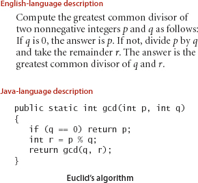
Most algorithms of interest involve organizing the data involved in the computation. Such organization leads to data structures, which also are central objects of study in computer science. Algorithms and data structures go hand in hand. In this book we take the view that data structures exist as the byproducts or end products of algorithms and that we must therefore study them in order to understand the algorithms. Simple algorithms can give rise to complicated data structures and, conversely, complicated algorithms can use simple data structures. We shall study the properties of many data structures in this book; indeed, we might well have titled the book Algorithms and Data Structures.
When we use a computer to help us solve a problem, we typically are faced with a number of possible approaches. For small problems, it hardly matters which approach we use, as long as we have one that correctly solves the problem. For huge problems (or applications where we need to solve huge numbers of small problems), however, we quickly become motivated to devise methods that use time and space efficiently.
The primary reason to learn about algorithms is that this discipline gives us the potential to reap huge savings, even to the point of enabling us to do tasks that would otherwise be impossible. In an application where we are processing millions of objects, it is not unusual to be able to make a program millions of times faster by using a well-designed algorithm. We shall see such examples on numerous occasions throughout the book. By contrast, investing additional money or time to buy and install a new computer holds the potential for speeding up a program by perhaps a factor of only 10 or 100. Careful algorithm design is an extremely effective part of the process of solving a huge problem, whatever the applications area.
When developing a huge or complex computer program, a great deal of effort must go into understanding and defining the problem to be solved, managing its complexity, and decomposing it into smaller subtasks that can be implemented easily. Often, many of the algorithms required after the decomposition are trivial to implement. In most cases, however, there are a few algorithms whose choice is critical because most of the system resources will be spent running those algorithms. These are the types of algorithms on which we concentrate in this book. We study fundamental algorithms that are useful for solving challenging problems in a broad variety of applications areas.
The sharing of programs in computer systems is becoming more widespread, so although we might expect to be using a large fraction of the algorithms in this book, we also might expect to have to implement only a small fraction of them. For example, the Java libraries contain implementations of a host of fundamental algorithms. However, implementing simple versions of basic algorithms helps us to understand them better and thus to more effectively use and tune advanced versions from a library. More important, the opportunity to reimplement basic algorithms arises frequently. The primary reason to do so is that we are faced, all too often, with completely new computing environments (hardware and software) with new features that old implementations may not use to best advantage. In this book, we concentrate on the simplest reasonable implementations of the best algorithms. We do pay careful attention to coding the critical parts of the algorithms, and take pains to note where low-level optimization effort could be most beneficial.
The choice of the best algorithm for a particular task can be a complicated process, perhaps involving sophisticated mathematical analysis. The branch of computer science that comprises the study of such questions is called analysis of algorithms. Many of the algorithms that we study have been shown through analysis to have excellent theoretical performance; others are simply known to work well through experience. Our primary goal is to learn reasonable algorithms for important tasks, yet we shall also pay careful attention to comparative performance of the methods. We should not use an algorithm without having an idea of what resources it might consume, so we strive to be aware of how our algorithms might be expected to perform.
As an overview, we describe the major parts of the book, giving specific topics covered and an indication of our general orientation toward the material. This set of topics is intended to touch on as many fundamental algorithms as possible. Some of the areas covered are core computer-science areas that we study in depth to learn basic algorithms of wide applicability. Other algorithms that we discuss are from advanced fields of study within computer science and related fields. The algorithms that we consider are the products of decades of research and development and continue to play an essential role in the ever-expanding applications of computation.
Fundamentals (CHAPTER 1) in the context of this book are the basic principles and methodology that we use to implement, analyze, and compare algorithms. We consider our Java programming model, data abstraction, basic data structures, abstract data types for collections, methods of analyzing algorithm performance, and a case study.
Sorting algorithms (CHAPTER 2) for rearranging arrays in order are of fundamental importance. We consider a variety of algorithms in considerable depth, including insertion sort, selection sort, shellsort, quicksort, mergesort, and heapsort. We also encounter algorithms for several related problems, including priority queues, selection, and merging. Many of these algorithms will find application as the basis for other algorithms later in the book.
Searching algorithms (CHAPTER 3) for finding specific items among large collections of items are also of fundamental importance. We discuss basic and advanced methods for searching, including binary search trees, balanced search trees, and hashing. We note relationships among these methods and compare performance.
Graphs (CHAPTER 4) are sets of objects and connections, possibly with weights and orientation. Graphs are useful models for a vast number of difficult and important problems, and the design of algorithms for processing graphs is a major field of study. We consider depth-first search, breadth-first search, connectivity problems, and several algorithms and applications, including Kruskal’s and Prim’s algorithms for finding minimum spanning tree and Dijkstra’s and the Bellman-Ford algorithms for solving shortest-paths problems.
Strings (CHAPTER 5) are an essential data type in modern computing applications. We consider a range of methods for processing sequences of characters. We begin with faster algorithms for sorting and searching when keys are strings. Then we consider substring search, regular expression pattern matching, and data-compression algorithms. Again, an introduction to advanced topics is given through treatment of some elementary problems that are important in their own right.
Context (CHAPTER 6) helps us relate the material in the book to several other advanced fields of study, including scientific computing, operations research, and the theory of computing. We survey event-driven simulation, B-trees, suffix arrays, maximum flow, and other advanced topics from an introductory viewpoint to develop appreciation for the interesting advanced fields of study where algorithms play a critical role. Finally, we describe search problems, reduction, and NP-completeness to introduce the theoretical underpinnings of the study of algorithms and relationships to material in this book.
THE STUDY OF ALGORITHMS IS INTERESTING AND EXCITING because it is a new field (almost all the algorithms that we study are less than 50 years old, and some were just recently discovered) with a rich tradition (a few algorithms have been known for hundreds of years). New discoveries are constantly being made, but few algorithms are completely understood. In this book we shall consider intricate, complicated, and difficult algorithms as well as elegant, simple, and easy ones. Our challenge is to understand the former and to appreciate the latter in the context of scientific and commercial applications. In doing so, we shall explore a variety of useful tools and develop a style of algorithmic thinking that will serve us well in computational challenges to come.
OUR STUDY OF ALGORITHMS is based upon implementing them as programs written in the Java programming language. We do so for several reasons:
• Our programs are concise, elegant, and complete descriptions of algorithms.
• You can run the programs to study properties of the algorithms.
• You can put the algorithms immediately to good use in applications.
These are important and significant advantages over the alternatives of working with English-language descriptions of algorithms.
A potential downside to this approach is that we have to work with a specific programming language, possibly making it difficult to separate the idea of the algorithm from the details of its implementation. Our implementations are designed to mitigate this difficulty, by using programming constructs that are both found in many modern languages and needed to adequately describe the algorithms.
We use only a small subset of Java. While we stop short of formally defining the subset that we use, you will see that we make use of relatively few Java constructs, and that we emphasize those that are found in many modern programming languages. The code that we present is complete, and our expectation is that you will download it and execute it, on our test data or test data of your own choosing.
We refer to the programming constructs, software libraries, and operating system features that we use to implement and describe algorithms as our programming model. In this section and SECTION 1.2, we fully describe this programming model. The treatment is self-contained and primarily intended for documentation and for your reference in understanding any code in the book. The model we describe is the same model introduced in our book An Introduction to Programming in Java: An Interdisciplinary Approach, which provides a slower-paced introduction to the material.
For reference, the figure on the facing page depicts a complete Java program that illustrates many of the basic features of our programming model. We use this code for examples when discussing language features, but defer considering it in detail to page 46 (it implements a classic algorithm known as binary search and tests it for an application known as whitelist filtering). We assume that you have experience programming in some modern language, so that you are likely to recognize many of these features in this code. Page references are included in the annotations to help you find answers to any questions that you might have. Since our code is somewhat stylized and we strive to make consistent use of various Java idioms and constructs, it is worthwhile even for experienced Java programmers to read the information in this section.
A Java program (class) is either a library of static methods (functions) or a data type definition. To create libraries of static methods and data-type definitions, we use the following seven components, the basis of programming in Java and many other modern languages:
• Primitive data types precisely define the meaning of terms like integer, real number, and boolean value within a computer program. Their definition includes the set of possible values and operations on those values, which can be combined into expressions like mathematical expressions that define values.
• Statements allow us to define a computation by creating and assigning values to variables, controlling execution flow, or causing side effects. We use six types of statements: declarations, assignments, conditionals, loops, calls, and returns.
• Arrays allow us to work with multiple values of the same type.
• Static methods allow us to encapsulate and reuse code and to develop programs as a set of independent modules.
• Strings are sequences of characters. Some operations on them are built in to Java.
• Input/output sets up communication between programs and the outside world.
• Data abstraction extends encapsulation and reuse to allow us to define non-primitive data types, thus supporting object-oriented programming.
In this section, we will consider the first five of these in turn. Data abstraction is the topic of the next section.
Running a Java program involves interacting with an operating system or a program development environment. For clarity and economy, we describe such actions in terms of a virtual terminal, where we interact with programs by typing commands to the system. See the booksite for details on using a virtual terminal on your system, or for information on using one of the many more advanced program development environments that are available on modern systems.
For example, BinarySearch is two static methods, rank() and main(). The first static method, rank(), is four statements: two declarations, a loop (which is itself an assignment and two conditionals), and a return. The second, main(), is three statements: a declaration, a call, and a loop (which is itself an assignment and a conditional).
To invoke a Java program, we first compile it using the javac command, then run it using the java command. For example, to run BinarySearch, we first type the command javac BinarySearch.java (which creates a file BinarySearch.class that contains a lower-level version of the program in Java bytecode in the file BinarySearch.class). Then we type java BinarySearch (followed by a whitelist file name) to transfer control to the bytecode version of the program. To develop a basis for understanding the effect of these actions, we next consider in detail primitive data types and expressions, the various kinds of Java statements, arrays, static methods, strings, and input/output.
A data type is a set of values and a set of operations on those values. We begin by considering the following four primitive data types that are the basis of the Java language:
• Integers, with arithmetic operations (int)
• Real numbers, again with arithmetic operations (double)
• Booleans, the set of values { true, false } with logical operations (boolean)
• Characters, the alphanumeric characters and symbols that you type (char)
Next we consider mechanisms for specifying values and operations for these types.
A Java program manipulates variables that are named with identifiers. Each variable is associated with a data type and stores one of the permissible data-type values. In Java code, we use expressions like familiar mathematical expressions to apply the operations associated with each type. For primitive types, we use identifiers to refer to variables, operator symbols such as + - * / to specify operations, literals such as 1 or 3.14 to specify values, and expressions such as (x + 2.236)/2 to specify operations on values. The purpose of an expression is to define one of the data-type values.
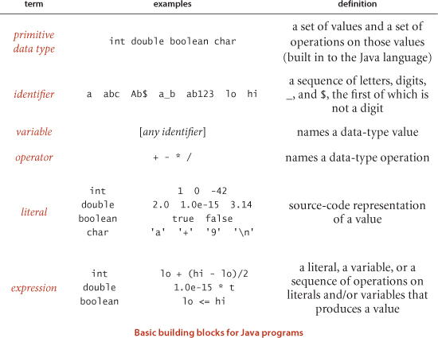
To define a data type, we need only specify the values and the set of operations on those values. This information is summarized in the table below for Java’s int, double, boolean, and char data types. These data types are similar to the basic data types found in many programming languages. For int and double, the operations are familiar arithmetic operations; for boolean, they are familiar logical operations. It is important to note that +, -, *, and / are overloaded—the same symbol specifies operations in multiple different types, depending on context. The key property of these primitive operations is that an operation involving values of a given type has a value of that type. This rule highlights the idea that we are often working with approximate values, since it is often the case that the exact value that would seem to be defined by the expression is not a value of the type. For example, 5/3 has the value 1 and 5.0/3.0 has a value very close to 1.66666666666667 but neither of these is exactly equal to 5/3. This table is far from complete; we discuss some additional operators and various exceptional situations that we occasionally need to consider in the Q&A at the end of this section.

As illustrated in the table at the bottom of the previous page, typical expressions are infix: a literal (or an expression), followed by an operator, followed by another literal (or another expression). When an expression contains more than one operator, the order in which they are applied is often significant, so the following precedence conventions are part of the Java language specification: The operators * and / (and %) have higher precedence than (are applied before) the + and - operators; among logical operators, ! is the highest precedence, followed by && and then ||. Generally, operators of the same precedence are applied left to right. As in standard arithmetic expressions, you can use parentheses to override these rules. Since precedence rules vary slightly from language to language, we use parentheses and otherwise strive to avoid dependence on precedence rules in our code.
Numbers are automatically promoted to a more inclusive type if no information is lost. For example, in the expression 1 + 2.5, the 1 is promoted to the double value 1.0 and the expression evaluates to the double value 3.5. A cast is a type name in parentheses within an expression, a directive to convert the following value into a value of that type. For example (int) 3.7 is 3 and (double) 3 is 3.0. Note that casting to an int is truncation instead of rounding—rules for casting within complicated expressions can be intricate, and casts should be used sparingly and with care. A best practice is to use expressions that involve literals or variables of a single type.
The following operators compare two values of the same type and produce a boolean value: equal (==), not equal (!=), less than (<), less than or equal (<=), greater than (>), and greater than or equal (>=). These operators are known as mixed-type operators because their value is boolean, not the type of the values being compared. An expression with a boolean value is known as a boolean expression. Such expressions are essential components in conditional and loop statements, as we will see.
Java’s int has 232 different values by design, so it can be represented in a 32-bit machine word (many machines have 64-bit words nowadays, but the 32-bit int persists). Similarly, the double standard specifies a 64-bit representation. These data-type sizes are adequate for typical applications that use integers and real numbers. To provide flexibility, Java has five additional primitive data types:
• 64-bit integers, with arithmetic operations (long)
• 16-bit integers, with arithmetic operations (short)
• 16-bit characters, with arithmetic operations (char)
• 8-bit integers, with arithmetic operations (byte)
• 32-bit single-precision real numbers, again with arithmetic operations (float)
We most often use int and double arithmetic operations in this book, so we do not consider the others (which are very similar) in further detail here.
A Java program is composed of statements, which define the computation by creating and manipulating variables, assigning data-type values to them, and controlling the flow of execution of such operations. Statements are often organized in blocks, sequences of statements within curly braces.
• Declarations create variables of a specified type and name them with identifiers.
• Assignments associate a data-type value (defined by an expression) with a variable. Java also has several implicit assignment idioms for changing the value of a data-type value relative to its current value, such as incrementing the value of an integer variable.
• Conditionals provide for a simple change in the flow of execution—execute the statements in one of two blocks, depending on a specified condition.
• Loops provide for a more profound change in the flow of execution—execute the statements in a block as long as a given condition is true.
• Calls and returns relate to static methods (see page 22), which provide another way to change the flow of execution and to organize code.
A program is a sequence of statements, with declarations, assignments, conditionals, loops, calls, and returns. Programs typically have a nested structure: a statement among the statements in a block within a conditional or a loop may itself be a conditional or a loop. For example, the while loop in rank() contains an if statement. Next, we consider each of these types of statements in turn.
A declaration statement associates a variable name with a type at compile time. Java requires us to use declarations to specify the names and types of variables. By doing so, we are being explicit about any computation that we are specifying. Java is said to be a strongly typed language, because the Java compiler checks for consistency (for example, it does not permit us to multiply a boolean and a double). Declarations can appear anywhere before a variable is first used—most often, we put them at the point of first use. The scope of a variable is the part of the program where it is defined. Generally the scope of a variable is composed of the statements that follow the declaration in the same block as the declaration.
An assignment statement associates a data-type value (defined by an expression) with a variable. When we write c = a + b in Java, we are not expressing mathematical equality, but are instead expressing an action: set the value of the variable c to be the value of a plus the value of b. It is true that c is mathematically equal to a + b immediately after the assignment statement has been executed, but the point of the statement is to change the value of c (if necessary). The left-hand side of an assignment statement must be a single variable; the right-hand side can be an arbitrary expression that produces a value of the type.
Most computations require different actions for different inputs. One way to express these differences in Java is the if statement:
if (<boolean expression>) { <block statements> }
This description introduces a formal notation known as a template that we use occasionally to specify the format of Java constructs. We put within angle brackets (< >) a construct that we have already defined, to indicate that we can use any instance of that construct where specified. In this case, <boolean expression> represents an expression that has a boolean value, such as one involving a comparison operation, and <block statements> represents a sequence of Java statements. It is possible to make formal definitions of <boolean expression> and <block statements>, but we refrain from going into that level of detail. The meaning of an if statement is self-explanatory: the statement(s) in the block are to be executed if and only if the boolean expression is true. The if-else statement:
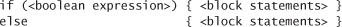
allows for choosing between two alternative blocks of statements.
Many computations are inherently repetitive. The basic Java construct for handling such computations has the following format:
while (<boolean expression>) { <block statements> }
The while statement has the same form as the if statement (the only difference being the use of the keyword while instead of if), but the meaning is quite different. It is an instruction to the computer to behave as follows: if the boolean expression is false, do nothing; if the boolean expression is true, execute the sequence of statements in the block (just as with if) but then check the boolean expression again, execute the sequence of statements in the block again if the boolean expression is true, and continue as long as the boolean expression is true. We refer to the statements in the block in a loop as the body of the loop.
Some situations call for slightly more complicated control flow than provided by the basic if and while statements. Accordingly, Java supports two additional statements for use within while loops:
• The break statement, which immediately exits the loop
• The continue statement, which immediately begins the next iteration of the loop
We rarely use these statements in the code in this book (and many programmers never use them), but they do considerably simplify code in certain instances.
There are several ways to express a given computation; we seek clear, elegant, and efficient code. Such code often takes advantage of the following widely used shortcuts (that are found in many languages, not just Java).
We can combine a declaration with an assignment to initialize a variable at the same time that it is declared (created). For example, the code int i = 1; creates an int variable named i and assigns it the initial value 1. A best practice is to use this mechanism close to first use of the variable (to limit scope).
The following shortcuts are available when our purpose is to modify a variable’s value relative to its current value:
• Increment/decrement operators: ++i is the same as i = i + 1; both have the value i in an expression. Similarly, --i is the same as i = i - 1. The code i++ and i-- are the same except that the expression value is the value before the increment/decrement, not after.
• Other compound operators: Prepending a binary operator to the = in an assignment is equivalent to using the variable on the left as the first operand. For example, the code i/=2; is equivalent to the code i = i/2; Note that i += 1; has the same effect as i = i+1; (and i++).
If a block of statements in a conditional or a loop has only a single statement, the curly braces may be omitted.
Many loops follow this scheme: initialize an index variable to some value and then use a while loop to test a loop continuation condition involving the index variable, where the last statement in the while loop increments the index variable. You can express such loops compactly with Java’s for notation:

This code is, with only a few exceptions, equivalent to
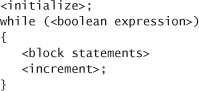
We use for loops to support this initialize-and-increment programming idiom.
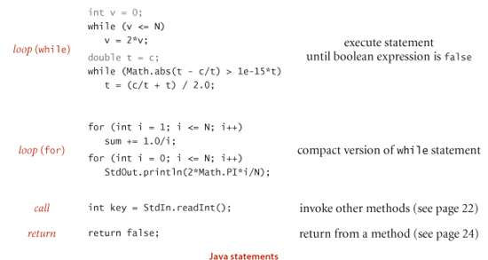
An array stores a sequence of values that are all of the same type. We want not only to store values but also to access each individual value. The method that we use to refer to individual values in an array is numbering and then indexing them. If we have N values, we think of them as being numbered from 0 to N−1. Then, we can unambiguously specify one of them in Java code by using the notation a[i] to refer to the ith value for any value of i from 0 to N-1. This Java construct is known as a one-dimensional array.
Making an array in a Java program involves three distinct steps:
• Declare the array name and type.
• Create the array.
• Initialize the array values.
To declare the array, you need to specify a name and the type of data it will contain. To create it, you need to specify its length (the number of values). For example, the “long form” code shown at right makes an array of N numbers of type double, all initialized to 0.0. The first statement is the array declaration. It is just like a declaration of a variable of the corresponding primitive type except for the square brackets following the type name, which specify that we are declaring an array. The keyword new in the second statement is a Java directive to create the array. The reason that we need to explicitly create arrays at run time is that the Java compiler cannot know how much space to reserve for the array at compile time (as it can for primitive-type values). The for statement initializes the N array values. This code sets all of the array entries to the value 0.0. When you begin to write code that uses an array, you must be sure that your code declares, creates, and initializes it. Omitting one of these steps is a common programming mistake.
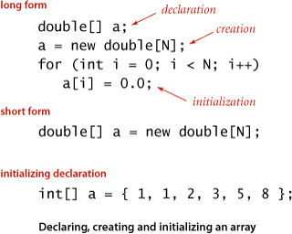
For economy in code, we often take advantage of Java’s default array initialization convention and combine all three steps into a single statement, as in the “short form” code in our example. The code to the left of the equal sign constitutes the declaration; the code to the right constitutes the creation. The for loop is unnecessary in this case because the default initial value of variables of type double in a Java array is 0.0, but it would be required if a nonzero value were desired. The default initial value is zero for numeric types and false for type boolean.
The third option shown for our example is to specify the initialization values at compile time, by listing literal values between curly braces, separated by commas.
Typical array-processing code is shown on page 21. After declaring and creating an array, you can refer to any individual value anywhere you would use a variable name in a program by enclosing an integer index in square brackets after the array name. Once we create an array, its size is fixed. A program can refer to the length of an array a[] with the code a.length. The last element of an array a[] is always a[a.length-1]. Java does automatic bounds checking—if you have created an array of size N and use an index whose value is less than 0 or greater than N-1, your program will terminate with an ArrayOutOfBoundsException runtime exception.
Note carefully that an array name refers to the whole array—if we assign one array name to another, then both refer to the same array, as illustrated in the following code fragment.

This situation is known as aliasing and can lead to subtle bugs. If your intent is to make a copy of an array, then you need to declare, create, and initialize a new array and then copy all of the entries in the original array to the new array, as in the third example on page 21.
A two-dimensional array in Java is an array of one-dimensional arrays. A two-dimensional array may be ragged (its arrays may all be of differing lengths), but we most often work with (for appropriate parameters M and N) M-by-N two-dimensional arrays that are arrays of M rows, each an array of length N (so it also makes sense to refer to the array as having N columns). Extending Java array constructs to handle two-dimensional arrays is straightforward. To refer to the entry in row i and column j of a two-dimensional array a[][], we use the notation a[i][j]; to declare a two-dimensional array, we add another pair of square brackets; and to create the array, we specify the number of rows followed by the number of columns after the type name (both within square brackets), as follows:
double[][] a = new double[M][N];
We refer to such an array as an M-by-N array. By convention, the first dimension is the number of rows and the second is the number of columns. As with one-dimensional arrays, Java initializes all entries in arrays of numeric types to zero and in arrays of boolean values to false. Default initialization of two-dimensional arrays is useful because it masks more code than for one-dimensional arrays. The following code is equivalent to the single-line create-and-initialize idiom that we just considered:
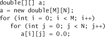
This code is superfluous when initializing to zero, but the nested for loops are needed to initialize to other value(s).
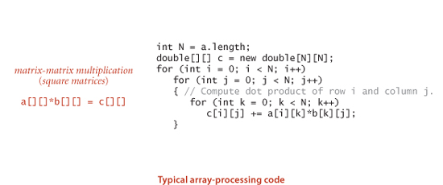
Every Java program in this book is either a data-type definition (which we describe in detail in SECTION 1.2) or a library of static methods (which we describe here). Static methods are called functions in many programming languages, since they can behave like mathematical functions, as described next. Each static method is a sequence of statements that are executed, one after the other, when the static method is called, in the manner described below. The modifier static distinguishes these methods from instance methods, which we discuss in SECTION 1.2. We use the word method without a modifier when describing characteristics shared by both kinds of methods.
A method encapsulates a computation that is defined as a sequence of statements. A method takes arguments (values of given data types) and computes a return value of some data type that depends upon the arguments (such as a value defined by a mathematical function) or causes a side effect that depends on the arguments (such as printing a value). The static method rank() in BinarySearch is an example of the first; main() is an example of the second. Each static method is composed of a signature (the keywords public static followed by a return type, the method name, and a sequence of arguments, each with a declared type) and a body (a statement block: a sequence of statements, enclosed in curly braces). Examples of static methods are shown in the table on the facing page.
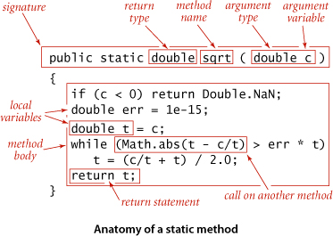
A call on a static method is its name followed by expressions that specify argument values in parentheses, separated by commas. When the method call is part of an expression, the method computes a value and that value is used in place of the call in the expression. For example the call on rank() in BinarySearch() returns an int value. A method call followed by a semicolon is a statement that generally causes side effects. For example, the call Arrays.sort() in main() in BinarySearch is a call on the system method Arrays.sort() that has the side effect of putting the entries in the array in sorted order. When a method is called, its argument variables are initialized with the values of the corresponding expressions in the call. A return statement terminates a static method, returning control to the caller. If the static method is to compute a value, that value must be specified in a return statement (if such a static method can reach the end of its sequence of statements without a return, the compiler will report the error).
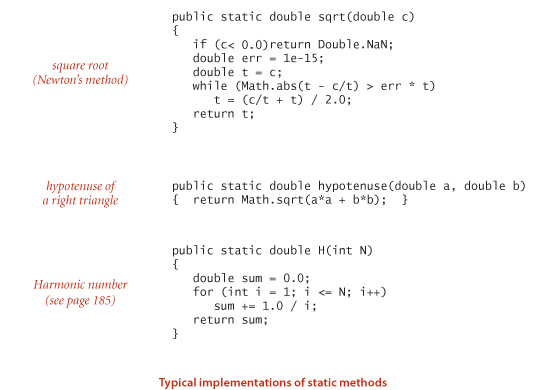
A complete detailed description of the properties of methods is beyond our scope, but the following points are worth noting:
• Arguments are passed by value. You can use argument variables anywhere in the code in the body of the method in the same way you use local variables. The only difference between an argument variable and a local variable is that the argument variable is initialized with the argument value provided by the calling code. The method works with the value of its arguments, not the arguments themselves. One consequence of this approach is that changing the value of an argument variable within a static method has no effect on the calling code. Generally, we do not change argument variables in the code in this book. The pass-by-value convention implies that array arguments are aliased (see page 19)—the method uses the argument variable to refer to the caller’s array and can change the contents of the array (though it cannot change the array itself). For example, Arrays.sort() certainly changes the contents of the array passed as argument: it puts the entries in order.
• Method names can be overloaded. For example, the Java Math library uses this approach to provide implementations of Math.abs(), Math.min(), and Math.max() for all primitive numeric types. Another common use of overloading is to define two different versions of a function, one that takes an argument and another that uses a default value of that argument.
• A method has a single return value but may have multiple return statements. A Java method can provide only one return value, of the type declared in the method signature. Control goes back to the calling program as soon as the first return statement in a static method is reached. You can put return statements wherever you need them. Even though there may be multiple return statements, any static method returns a single value each time it is invoked: the value following the first return statement encountered.
• A method can have side effects. A method may use the keyword void as its return type, to indicate that it has no return value. An explicit return is not necessary in a void static method: control returns to the caller after the last statement. A void static method is said to produce side effects (consume input, produce output, change entries in an array, or otherwise change the state of the system). For example, the main() static method in our programs has a void return type because its purpose is to produce output. Technically, void methods do not implement mathematical functions (and neither does Math.random(), which takes no arguments but does produce a return value).
The instance methods that are the subject of SECTION 2.1 share these properties, though profound differences surround the issue of side effects.
A method can call itself (if you are not comfortable with this idea, known as recursion, you are encouraged to work EXERCISES 1.1.16 through 1.1.22). For example, the code at the bottom of this page gives an alternate implementation of the rank() method in BinarySearch. We often use recursive implementations of methods because they can lead to compact, elegant code that is easier to understand than a corresponding implementation that does not use recursion. For example, the comment in the implementation below provides a succinct description of what the code is supposed to do. We can use this comment to convince ourselves that it operates correctly, by mathematical induction. We will expand on this topic and provide such a proof for binary search in SECTION 3.1. There are three important rules of thumb in developing recursive programs:
• The recursion has a base case—we always include a conditional statement as the first statement in the program that has a return.
• Recursive calls must address subproblems that are smaller in some sense, so that recursive calls converge to the base case. In the code below, the difference between the values of the fourth and the third arguments always decreases.
• Recursive calls should not address subproblems that overlap. In the code below, the portions of the array referenced by the two subproblems are disjoint.
Violating any of these guidelines is likely to lead to incorrect results or a spectacularly inefficient program (see EXERCISES 1.1.19 and 1.1.27). Adhering to them is likely to lead to a clear and correct program whose performance is easy to understand. Another reason to use recursive methods is that they lead to mathematical models that we can use to understand performance. We address this issue for binary search in SECTION 3.2 and in several other instances throughout the book.
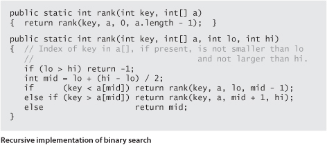
A library of static methods is a set of static methods that are defined in a Java class, by creating a file with the keywords public class followed by the class name, followed by the static methods, enclosed in braces, kept in a file with the same name as the class and a .java extension. A basic model for Java programming is to develop a program that addresses a specific computational task by creating a library of static methods, one of which is named main(). Typing java followed by a class name followed by a sequence of strings leads to a call on main() in that class, with an array containing those strings as argument. After the last statement in main() executes, the program terminates. In this book, when we talk of a Java program for accomplishing a task, we are talking about code developed along these lines (possibly also including a data-type definition, as described in SECTION 1.2). For example, BinarySearch is a Java program composed of two static methods, rank() and main(), that accomplishes the task of printing numbers from an input stream that are not found in a whitelist file given as command-line argument.
Of critical importance in this model is that libraries of static methods enable modular programming where we build libraries of static methods (modules) and a static method in one library can call static methods defined in other libraries. This approach has many important advantages. It allows us to
• Work with modules of reasonable size, even in program involving a large amount of code
• Share and reuse code without having to reimplement it
• Easily substitute improved implementations
• Develop appropriate abstract models for addressing programming problems
• Localize debugging (see the paragraph below on unit testing)
For example, BinarySearch makes use of three other independently developed libraries, our StdIn and In library and Java’s Arrays library. Each of these libraries, in turn, makes use of several other libraries.
A best practice in Java programming is to include a main() in every library of static methods that tests the methods in the library (some other programming languages disallow multiple main() methods and thus do not support this approach). Proper unit testing can be a significant programming challenge in itself. At a minimum, every module should contain a main() method that exercises the code in the module and provides some assurance that it works. As a module matures, we often refine the main() method to be a development client that helps us do more detailed tests as we develop the code, or a test client that tests all the code extensively. As a client becomes more complicated, we might put it in an independent module. In this book, we use main() to help illustrate the purpose of each module and leave test clients for exercises.
We use static methods from four different kinds of libraries, each requiring (slightly) differing procedures for code reuse. Most of these are libraries of static methods, but a few are data-type definitions that also include some static methods.
• The standard system libraries java.lang.*. These include Math, which contains methods for commonly used mathematical functions; Integer and Double, which we use for converting between strings of characters and int and double values; String and StringBuilder, which we discuss in detail later in this section and in CHAPTER 5; and dozens of other libraries that we do not use.
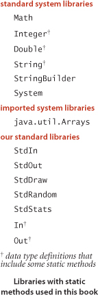
• Imported system libraries such as java.util.Arrays. There are thousands of such libraries in a standard Java release, but we make scant use of them in this book. An import statement at the beginning of the program is needed to use such libraries (and signal that we are doing so).
• Other libraries in this book. For example, another program can use rank() in BinarySearch. To use such a program, download the source from the booksite into your working directory.
• The standard libraries Std* that we have developed for use in this book (and our introductory book An Introduction to Programming in Java: An Interdisciplinary Approach). These libraries are summarized in the following several pages. Source code and instructions for downloading them are available on the booksite.
To invoke a method from another library (one in the same directory or a specified directory, a standard system library, or a system library that is named in an import statement before the class definition), we prepend the library name to the method name for each call. For example, the main() method in BinarySearch calls the sort() method in the system library java.util.Arrays, the readInts() method in our library In, and the println() method in our library StdOut.
LIBRARIES OF METHODS IMPLEMENTED BY OURSELVES AND BY OTHERS in a modular programming environment can vastly expand the scope of our programming model. Beyond all of the libraries available in a standard Java release, thousands more are available on the web for applications of all sorts. To limit the scope of our programming model to a manageable size so that we can concentrate on algorithms, we use just the libraries listed in the table at right on this page, with a subset of their methods listed in APIs, as described next.
A critical component of modular programming is documentation that explains the operation of library methods that are intended for use by others. We will consistently describe the library methods that we use in this book in application programming interfaces (APIs) that list the library name and the signatures and short descriptions of each of the methods that we use. We use the term client to refer to a program that calls a method in another library and the term implementation to describe the Java code that implements the methods in an API.
The following example, the API for commonly used static methods from the standard Math library in java.lang, illustrates our conventions for APIs:
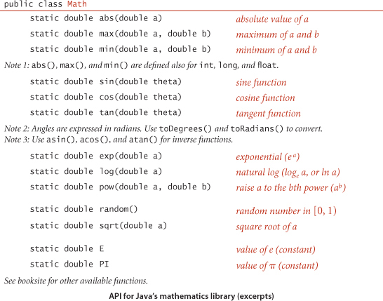
These methods implement mathematical functions—they use their arguments to compute a value of a specified type (except random(), which does not implement a mathematical function because it does not take an argument). Since they all operate on double values and compute a double result, you can consider them as extending the double data type—extensibility of this nature is one of the characteristic features of modern programming languages. Each method is described by a line in the API that specifies the information you need to know in order to use the method. The Math library also defines the precise constant values PI (for π) and E (for e), so that you can use those names to refer to those constants in your programs. For example, the value of Math.sin(Math.PI/2) is 1.0 and the value of Math.log(Math.E) is 1.0 (because Math.sin() takes its argument in radians and Math.log() implements the natural logarithm function).
Extensive online descriptions of thousands of libraries are part of every Java release, but we excerpt just a few methods that we use in the book, in order to clearly delineate our programming model. For example, BinarySearch uses the sort() method from Java’s Arrays library, which we document as follows:
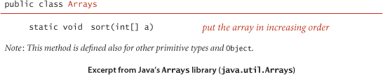
The Arrays library is not in java.lang, so an import statement is needed to use it, as in BinarySearch. Actually, CHAPTER 2 of this book is devoted to implementations of sort() for arrays, including the mergesort and quicksort algorithms that are implemented in Arrays.sort(). Many of the fundamental algorithms that we consider in this book are implemented in Java and in many other programming environments. For example, Arrays also includes an implementation of binary search. To avoid confusion, we generally use our own implementations, although there is nothing wrong with using a finely tuned library implementation of an algorithm that you understand.
We have developed a number of libraries that provide useful functionality for introductory Java programming, for scientific applications, and for the development, study, and application of algorithms. Most of these libraries are for input and output; we also make use of the following two libraries to test and analyze our implementations. The first extends Math.random() to allow us to draw random values from various distributions; the second supports statistical calculations:
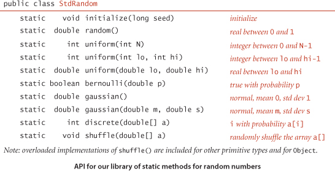
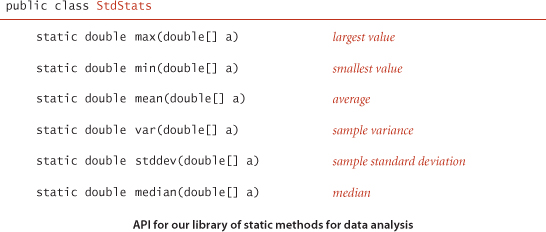
The initialize() method in StdRandom allows us to seed the random number generator so that we can reproduce experiments involving random numbers. For reference, implementations of many of these methods are given on page 32. Some of these methods are extremely easy to implement; why do we bother including them in a library? Answers to this question are standard for well-designed libraries:
• They implement a level of abstraction that allow us to focus on implementing and testing the algorithms in the book, not generating random objects or calculating statistics. Client code that uses such methods is clearer and easier to understand than homegrown code that does the same calculation.
• Library implementations test for exceptional conditions, cover rarely encountered situations, and submit to extensive testing, so that we can count on them to operate as expected. Such implementations might involve a significant amount of code. For example, we often want implementations for various types of data. For example, Java’s Arrays library includes multiple overloaded implementations of sort(), one for each type of data that you might need to sort.
These are bedrock considerations for modular programming in Java, but perhaps a bit overstated in this case. While the methods in both of these libraries are essentially self-documenting and many of them are not difficult to implement, some of them represent interesting algorithmic exercises. Accordingly, you are well-advised to both study the code in StdRandom.java and StdStats.java on the booksite and to take advantage of these tried-and-true implementations. The easiest way to use these libraries (and to examine the code) is to download the source code from the booksite and put them in your working directory; various system-dependent mechanisms for using them without making multiple copies are also described on the booksite.
It is worthwhile to consider every program that you write as a library implementation, for possible reuse in the future.
• Write code for the client, a top-level implementation that breaks the computation up into manageable parts.
• Articulate an API for a library (or multiple APIs for multiple libraries) of static methods that can address each part.
• Develop an implementation of the API, with a main() that tests the methods independent of the client.
Not only does this approach provide you with valuable software that you can later reuse, but also taking advantage of modular programming in this way is a key to successfully addressing a complex programming task.
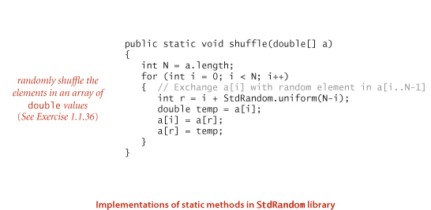
THE PURPOSE OF AN API is to separate the client from the implementation: the client should know nothing about the implementation other than information given in the API, and the implementation should not take properties of any particular client into account. APIs enable us to separately develop code for various purposes, then reuse it widely. No Java library can contain all the methods that we might need for a given computation, so this ability is a crucial step in addressing complex programming applications. Accordingly, programmers normally think of the API as a contract between the client and the implementation that is a clear specification of what each method is to do. Our goal when developing an implementation is to honor the terms of the contract. Often, there are many ways to do so, and separating client code from implementation code gives us the freedom to substitute new and improved implementations. In the study of algorithms, this ability is an important ingredient in our ability to understand the impact of algorithmic improvements that we develop.
A String is a sequence of characters (char values). A literal String is a sequence of characters within double quotes, such as "Hello, World". The data type String is a Java data type but it is not a primitive type. We consider String now because it is a fundamental data type that almost every Java program uses.
Java has a built-in concatenation operator (+) for String like the built-in operators that it has for primitive types, justifying the addition of the row in the table below to the primitive-type table on page 12. The result of concatenating two String values is a single String value, the first string followed by the second.
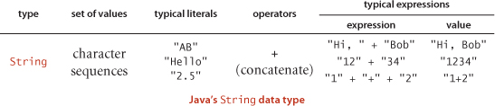
Two primary uses of strings are to convert values that we can enter on a keyboard into data-type values and to convert data-type values to values that we can read on a display. Java has built-in operations for String to facilitate these operations. In particular, the language includes libraries Integer and Double that contain static methods to convert between String values and int values and between String values and double values, respectively.
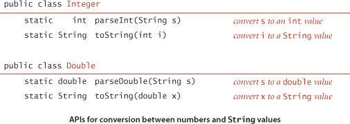
We rarely explicitly use the static toString() methods just described because Java has a built-in mechanism that allows us to convert from any data type value to a String value by using concatenation: if one of the arguments of + is a String, Java automatically converts the other argument to a String (if it is not already a String). Beyond usage like "The square root of 2.0 is " + Math.sqrt(2.0) this mechanism enables conversion of any data-type value to a String, by concatenating it with the empty string "".
One important use of strings in Java programming is to enable a mechanism for passing information from the command line to the program. The mechanism is simple. When you type the java command followed by a library name followed by a sequence of strings, the Java system invokes the main() method in that library with an array of strings as argument: the strings typed after the library name. For example, the main() method in BinarySearch takes one command-line argument, so the system creates an array of size one. The program uses that value, args[0], to name the file containing the whitelist, for use as the argument to In.readInts(). Another typical paradigm that we often use in our code is when a command-line argument is intended to represent a number, so we use parseInt() to convert to an int value or parseDouble() to convert to a double value.
COMPUTING WITH STRINGS is an essential component of modern computing. For the moment, we make use of String just to convert between external representation of numbers as sequences of characters and internal representation of numeric data-type values. In SECTION 1.2, we will see that Java supports many, many more operations on String values that we use throughout the book; in SECTION 1.4, we will examine the internal representation of String values; and in CHAPTER 5, we consider in depth algorithms that process String data. These algorithms are among the most interesting, intricate, and impactful methods that we consider in this book.
The primary purpose of our standard libraries for input, output, and drawing is to support a simple model for Java programs to interact with the outside world. These libraries are built upon extensive capabilities that are available in Java libraries, but are generally much more complicated and much more difficult to learn and use. We begin by briefly reviewing the model.
In our model, a Java program takes input values from command-line arguments or from an abstract stream of characters known as the standard input stream and writes to another abstract stream of characters known as the standard output stream.
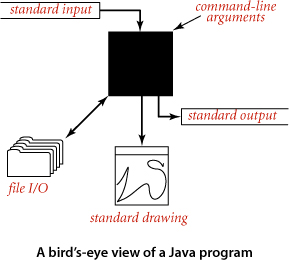
Necessarily, we need to consider the interface between Java and the operating system, so we need to briefly discuss basic mechanisms that are provided by most modern operating systems and program-development environments. You can find more details about your particular system on the booksite. By default, command-line arguments, standard input, and standard output are associated with an application supported by either the operating system or the program development environment that takes commands. We use the generic term terminal window to refer to the window maintained by this application, where we type and read text. Since early Unix systems in the 1970s this model has proven to be a convenient and direct way for us to interact with our programs and data. We add to the classical model a standard drawing that allows us to create visual representations for data analysis.
In the terminal window, we see a prompt, where we type commands to the operating system that may take arguments. We use only a few commands in this book, shown in the table below. Most often, we use the .java command, to run our programs. As mentioned on page 35, Java classes have a main() static method that takes a String array args[] as its argument. That array is the sequence of command-line arguments that we type, provided to Java by the operating system. By convention, both Java and the operating system process the arguments as strings. If we intend for an argument to be a number, we use a method such as Integer.parseInt() to convert it from String to the appropriate type.
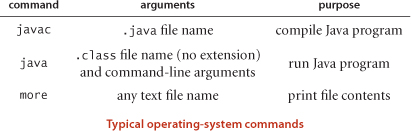
Our StdOut library provides support for standard output. By default, the system connects standard output to the terminal window. The print() method puts its argument on standard output; the println() method adds a newline; and the printf() method supports formatted output, as described next. Java provides a similar method in its System.out library; we use StdOut to treat standard input and standard output in a uniform manner (and to provide a few technical improvements).

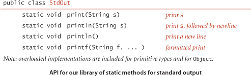
To use these methods, download into your working directory StdOut.java from the booksite and use code such as StdOut.println("Hello, World"); to call them. A sample client is shown at right.
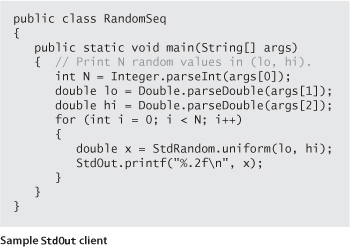
In its simplest form, printf() takes two arguments. The first argument is a format string that describes how the second argument is to be converted to a string for output. The simplest type of format string begins with % and ends with a one-letter conversion code. The conversion codes that we use most frequently are d (for decimal values from Java’s integer types), f (for floating-point values), and s (for String values). Between the % and the conversion code is an integer value that specifies the field width of the converted value (the number of characters in the converted output string). By default, blank spaces are added on the left to make the length of the converted output equal to the field width; if we want the spaces on the right, we can insert a minus sign before the field width. (If the converted output string is bigger than the field width, the field width is ignored.) Following the width, we have the option of including a period followed by the number of digits to put after the decimal point (the precision) for a double value or the number of characters to take from the beginning of the string for a String value. The most important thing to remember about using printf() is that the conversion code in the format and the type of the corresponding argument must match. That is, Java must be able to convert from the type of the argument to the type required by the conversion code. The first argument of printf() is a String that may contain characters other than a format string. Any part of the argument that is not part of a format string passes through to the output, with the format string replaced by the argument value (converted to a String as specified). For example, the statement
StdOut.printf("PI is approximately %.2f\n", Math.PI);
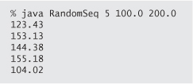
prints the line
PI is approximately 3.14
Note that we need to explicitly include the newline character \n in the argument in order to print a new line with printf(). The printf() function can take more than two arguments. In this case, the format string will have a format specifier for each additional argument, perhaps separated by other characters to pass through to the output. You can also use the static method String.format() with arguments exactly as just described for printf() to get a formatted string without printing it. Formatted printing is a convenient mechanism that allows us to develop compact code that can produce tabulated experimental data (our primary use in this book).
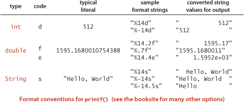
Our StdIn library takes data from the standard input stream that may be empty or may contain a sequence of values separated by whitespace (spaces, tabs, newline characters, and the like). By default, the system connects standard output to the terminal window—what you type is the input stream (terminated by <ctrl-d> or <ctrl-z>, depending on your terminal window application). Each value is a String or a value from one of Java’s primitive types. One of the key features of the standard input stream is that your program consumes values when it reads them. Once your program has read a value, it cannot back up and read it again. This assumption is restrictive, but it reflects physical characteristics of some input devices and simplifies implementing the abstraction. Within the input stream model, the static methods in this library are largely self-documenting (described by their signatures).
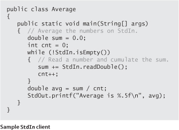
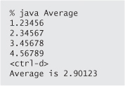
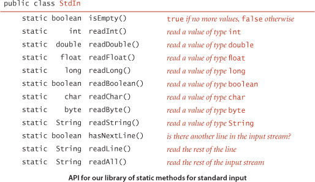
Standard input and output enable us to take advantage of command-line extensions supported by many operating-systems. By adding a simple directive to the command that invokes a program, we can redirect its standard output to a file, either for permanent storage or for input to another program at a later time:
% java RandomSeq 1000 100.0 200.0 > data.txt
This command specifies that the standard output stream is not to be printed in the terminal window, but instead is to be written to a text file named data.txt. Each call to StdOut.print() or StdOut.println() appends text at the end of that file. In this example, the end result is a file that contains 1,000 random values. No output appears in the terminal window: it goes directly into the file named after the > symbol. Thus, we can save away information for later retrieval. Note that we do not have to change RandomSeq in any way—it is using the standard output abstraction and is unaffected by our use of a different implementation of that abstraction. Similarly, we can redirect standard input so that StdIn reads data from a file instead of the terminal application:
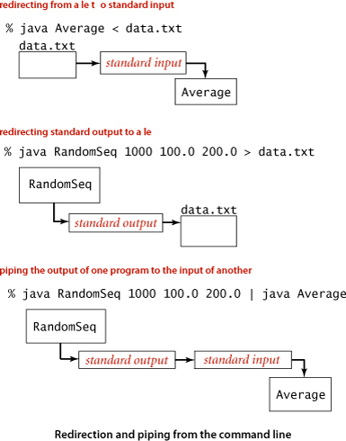
This command reads a sequence of numbers from the file data.txt and computes their average value. Specifically, the < symbol is a directive that tells the operating system to implement the standard input stream by reading from the text file data.txt instead of waiting for the user to type something into the terminal window. When the program calls StdIn.readDouble(), the operating system reads the value from the file. Combining these to redirect the output of one program to the input of another is known as piping:
This command specifies that standard output for RandomSeq and standard input for Average are the same stream. The effect is as if RandomSeq were typing the numbers it generates into the terminal window while Average is running. This difference is profound, because it removes the limitation on the size of the input and output streams that we can process. For example, we could replace 1000 in our example with 1000000000, even though we might not have the space to save a billion numbers on our computer (we do need the time to process them). When RandomSeq calls StdOut.println(), a string is added to the end of the stream; when Average calls StdIn.readInt(), a string is removed from the beginning of the stream. The timing of precisely what happens is up to the operating system: it might run RandomSeq until it produces some numbers, and then run Average to consume those numbers, or it might run Average until it needs to consume a number, and then run RandomSeq until it produces the needed output. The end result is the same, but our programs are freed from worrying about such details because they work solely with the standard input and standard output abstractions.
Our In and Out libraries provide static methods that implement the abstraction of reading from and writing to a file the contents of an array of values of a primitive type (or String). We use readInts(), readDoubles(), and readStrings() in the In library and writeInts(), writeDoubles(), and writeStrings() in the Out library. The named argument can be a file or a web page. For example, this ability allows us to use a file and standard input for two different purposes in the same program, as in BinarySearch. The In and Out libraries also implement data types with instance methods that allow us the more general ability to treat multiple files as input and output streams, and web pages as input streams, so we will revisit them in SECTION 1.2.
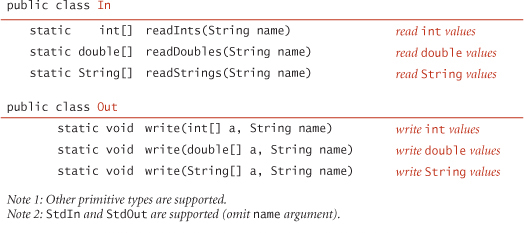
Up to this point, our input/output abstractions have focused exclusively on text strings. Now we introduce an abstraction for producing drawings as output. This library is easy to use and allows us to take advantage of a visual medium to cope with far more information than is possible with just text. As with standard input/output, our standard drawing abstraction is implemented in a library StdDraw that you can access by downloading the file StdDraw.java from the booksite into your working directory. Standard draw is very simple: we imagine an abstract drawing device capable of drawing lines and points on a two-dimensional canvas. The device is capable of responding to the commands to draw basic geometric shapes that our programs issue in the form of calls to static methods in StdDraw, including methods for drawing lines, points, text strings, circles, rectangles, and polygons. Like the methods for standard input and standard output, these methods are nearly self-documenting: StdDraw.line() draws a straight line segment connecting the point (x0, y0) with the point (x1, y1) whose coordinates are given as arguments. StdDraw.point() draws a spot centered on the point (x, y) whose coordinates are given as arguments, and so forth, as illustrated in the diagrams at right. Geometric shapes can be filled (in black, by default). The default scale is the unit square (all coordinates are between 0 and 1). The standard implementation displays the canvas in a window on your computer’s screen, with black lines and points on a white background.
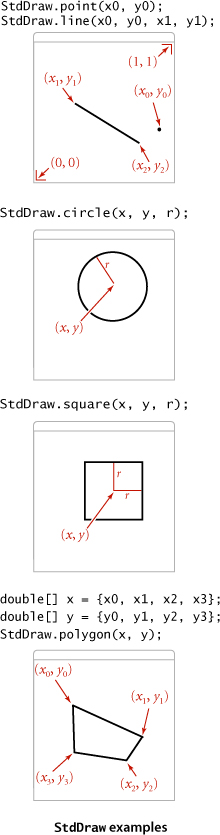
The library also includes methods to change the scale and size of the canvas, the color and width of the lines, the text font, and the timing of drawing (for use in animation). As arguments for setPenColor() you can use one of the predefined colors BLACK, BLUE, CYAN, DARK_GRAY, GRAY, GREEN, LIGHT_GRAY, MAGENTA, ORANGE, PINK, RED, BOOK_RED, WHITE, and YELLOW that are defined as constants in StdDraw (so we refer to one of them with code like StdDraw.RED). The window also includes a menu option to save your drawing to a file, in a format suitable for publishing on the web.
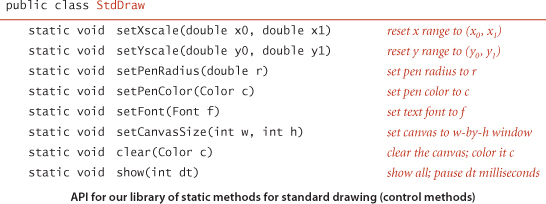
IN THIS BOOK, we use StdDraw for data analysis and for creating visual representations of algorithms in operation. The table at on the opposite page indicates some possiblities; we will consider many more examples in the text and the exercises throughout the book. The library also supports animation—of course, this topic is treated primarily on the booksite.
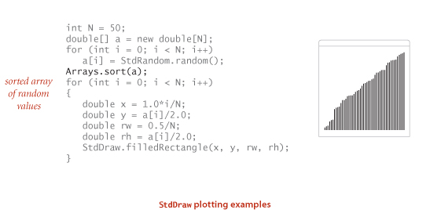
The sample Java program that we started with, shown on the facing page, is based on the famous, effective, and widely used binary search algorithm. This example is a prototype of the way in which we will examine new algorithms throughout the book. As with all of the programs we consider, it is both a precise definition of the method and a complete Java implementation that you can download from the booksite.
We will study the binary search algorithm in detail in SECTION 3.2, but a brief description is appropriate here. The algorithm is implemented in the static method rank(), which takes an integer key and a sorted array of int values as arguments and returns the index of the key if it is present in the array, -1 otherwise. It accomplishes this task by maintaining variables lo and hi such that the key is in a[lo..hi] if it is in the array, then entering into a loop that tests the middle entry in the interval (at index mid). If the key is equal to a[mid], the return value is mid; otherwise the method cuts the interval size about in half, looking at the left half if the key is less than a[mid] and at the right half if the key is greater than a[mid]. The process terminates when the key is found or the interval is empty. Binary search is effective because it needs to examine just a few array entries (relative to the size of the array) to find the key (or determine that it is not there).
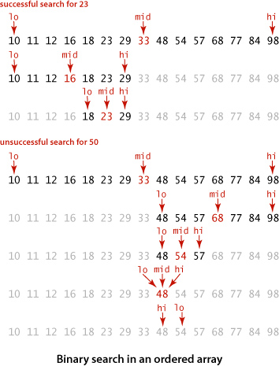
For every algorithm implementation, we include a development client main() that you can use with sample input files provided in the book and on the booksite to learn about the algorithm and to test its performance. In this example, the client reads integers from the file named on the command line, then prints any integers on standard input that do not appear in the file. We use small test files such as those shown at right to demonstrate this behavior, and as the basis for traces and examples such as those at left above. We use large test files to model real-world applications and to test performance (see page 48).
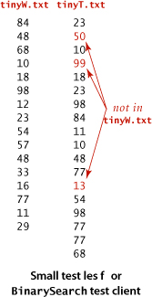
When possible, our development clients are intended to mirror practical situations and demonstrate the need for the algorithm at hand. In this case, the process is known as whitelisting. Specifically, imagine a credit card company that needs to check whether customer transactions are for a valid account. To do so, it can
• Keep customers account numbers in a file, which we refer to as a whitelist.
• Produce the account number associated with each transaction in the standard input stream.
• Use the test client to put onto standard output the numbers that are not associated with any customer. Presumably the company would refuse such transactions.
It would not be unusual for a big company with millions of customers to have to process millions of transactions or more. To model this situation, we provide on the booksite the files largeW.txt (1 million integers) and largeT.txt (10 million integers).
A working program is often not sufficient. For example, a much simpler implementation of rank(), which does not even require the array to be sorted, is to check every entry, as follows:
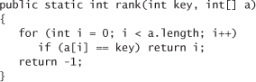
Given this simple and easy-to-understand solution, why do we use mergesort and binary search? If you work EXERCISE 1.1.38, you will see that your computer is too slow to run this brute-force implementation of rank() for large numbers of inputs (say, 1 million whitelist entries and 10 million transactions). Solving the whitelist problem for a large number of inputs is not feasible without efficient algorithms such as binary search and mergesort. Good performance is often of critical importance, so we lay the groundwork for studying performance in SECTION 1.4 and analyze the performance characteristics of all of our algorithms (including binary search, in SECTION 3.1 and mergesort, in SECTION 2.2).
IN THE PRESENT CONTEXT, our goal in thoroughly outlining our programming model is to ensure that you can run code like BinarySearch on your computer, use it on test data like ours, and modify it to adapt to various situations (such as those described in the exercises at the end of this section), in order to best understand its applicability. The programming model that we have sketched is designed to facilitate such activities, which are crucial to our approach to studying algorithms.
In this section, we have described a fine and complete programming model that served (and still serves) many programmers for many decades. Modern programming, however, goes one step further. This next level is called data abstraction, sometimes known as object-oriented programming, and is the subject of the next section. Simply put, the idea behind data abstraction is to allow a program to define data types (sets of values and sets of operations on those values), not just static methods that operate on predefined data types.
Object-oriented programming has come into widespread use in recent decades, and data abstraction is central to modern program development. We embrace data abstraction in this book for three primary reasons:
• It enables us to expand our ability to reuse code through modular programming. For example, our sorts in CHAPTER 2 and binary search and other algorithms in CHAPTER 3 allow clients to make use of the same code for any type of data (not just integers), including one defined by the client.
• It provides a convenient mechanism for building so-called linked data structures that provide more flexibility than arrays and are the basis of efficient algorithms in many settings.
• It enables us to precisely define the algorithmic challenges that we face. For example, our union-find algorithms in SECTION 1.5, our priority-queue algorithms in SECTION 2.4, and our symbol-table algorithms in CHAPTER 3 are all oriented toward defining data structures that enable efficient implementations of a set of operations. This challenge aligns perfectly with data abstraction.
Despite all of these considerations, our focus remains on the study of algorithms. In this context, we proceed to consider next the essential features of object-oriented programming that are relevant to our mission.
Q. What is Java bytecode?
A. A low-level version of your program that runs on the Java virtual machine. This level of abstraction makes it easier for the developers of Java to ensure that our programs run on a broad variety of devices.
Q. It seems wrong that Java should just let ints overflow and give bad values. Shouldn’t Java automatically check for overflow?
A. This issue is a contentious one among programmers. The short answer is that the lack of such checking is one reason such types are called primitive data types. A little knowledge can go a long way in avoiding such problems. We use the int type for small numbers (less than ten decimal digits), and the long type when values run into the billions or more.
Q. What is the value of Math.abs(-2147483648)?
A. -2147483648. This strange (but true) result is a typical example of the effects of integer overflow.
Q. How can I initialize a double variable to infinity?
A. Java has built-in constants available for this purpose: Double.POSITIVE_INFINITY and Double.NEGATIVE_INFINITY.
Q. Can you compare a double to an int?
A. Not without doing a type conversion, but remember that Java usually does the requisite type conversion automatically. For example, if x is an int with the value 3, then the expression (x < 3.1) is true—Java converts x to double (because 3.1 is a double literal) before performing the comparison.
Q. What happens if I use a variable before initializing it to a value?
A. Java will report a compile-time error if there is any path through your code that would lead to use of an uninitialized variable.
Q. What are the values of 1/0 and 1.0/0.0 as Java expressions?
A. The first generates a runtime exception for division by zero (which stops your program because the value is undefined); the second has the value Infinity.
Q. Can you use < and > to compare String variables?
A. No. Those operators are defined only for primitive types. See page 80.
Q. What is the result of division and remainder for negative integers?
A. The quotient a/b rounds toward 0; the remainder a % b is defined such that (a / b) * b + a % b is always equal to a. For example, -14/3 and 14/-3 are both -4, but -14 % 3 is -2 and 14 % -3 is 2.
Q. Why do we say (a && b) and not (a & b)?
A. The operators &, |, and ^ are bitwise logical operations for integer types that do and, or, and exclusive or (respectively) on each bit position. Thus the value of 10&6 is 2, the value of 10|6 is 14 and the value of 10^6 is 12. We use these operators rarely (but occasionally) in this book. The operators && and || are valid only in boolean expressions are included separately because of short-circuiting: an expression is evaluated left-to-right and the evaluation stops when the value is known.
Q. Is ambiguity in nested if statements a problem?
A. Yes. In Java, when you write
if <expr1> if <expr2> <stmntA> else <stmntB>
it is equivalent to
if <expr1> { if <expr2> <stmntA> else <stmntB> }
even if you might have been thinking
if <expr1> { if <expr2> <stmntA> } else <stmntB>
Using explicit braces is a good way to avoid this dangling else pitfall.
Q. What is the difference between a for loop and its while formulation?
A. The code in the for loop header is considered to be in the same block as the for loop body. In a typical for loop, the incrementing variable is not available for use in later statements; in the corresponding while loop, it is. This distinction is often a reason to use a while instead of a for loop.
Q. Some Java programmers use int a[] instead of int[] a to declare arrays. What’s the difference?
A. In Java, both are legal and equivalent. The former is how arrays are declared in C. The latter is the preferred style in Java since the type of the variable int[] more clearly indicates that it is an array of integers.
Q. Why do array indices start at 0 instead of 1?
A. This convention originated with machine-language programming, where the address of an array element would be computed by adding the index to the address of the beginning of an array. Starting indices at 1 would entail either a waste of space at the beginning of the array or a waste of time to subtract the 1.
Q. If a[] is an array, why does StdOut.println(a) print out a hexadecimal integer, such as @f62373, instead of the elements of the array?
A. Good question. It is printing out the memory address of the array, which, unfortunately, is rarely what you want.
Q. Why are we not using the standard Java libraries for input and graphics?
A. We are using them, but we prefer to work with simpler abstract models. The Java libraries behind StdIn and StdDraw are built for production programming, and the libraries and their APIs are a bit unwieldy. To get an idea of what they are like, look at the code in StdIn.java and StdDraw.java.
Q. Can my program reread data from standard input?
A. No. You only get one shot at it, in the same way that you cannot undo println().
Q. What happens if my program attempts to read after standard input is exhausted?
A. You will get an error. StdIn.isEmpty() allows you to avoid such an error by checking whether there is more input available.
Q. What does this error message mean?
Exception in thread "main" java.lang.NoClassDefFoundError: StdIn
A. You probably forgot to put StdIn.java in your working directory.
Q. Can a static method take another static method as an argument in Java?
A. No. Good question, since many other languages do support this capability.
1.1.1 Give the value of each of the following expressions:
a. ( 0 + 15 ) / 2
b. 2.0e-6 * 100000000.1
c. true && false || true && true
1.1.2 Give the type and value of each of the following expressions:
a. (1 + 2.236)/2
b. 1 + 2 + 3 + 4.0
c. 4.1 >= 4
d. 1 + 2 + "3"
1.1.3 Write a program that takes three integer command-line arguments and prints equal if all three are equal, and not equal otherwise.
1.1.4 What (if anything) is wrong with each of the following statements?
a. if (a > b) then c = 0;
b. if a > b { c = 0; }
c. if (a > b) c = 0;
d. if (a > b) c = 0 else b = 0;
1.1.5 Write a code fragment that prints true if the double variables x and y are both strictly between 0 and 1 and false otherwise.
1.1.6 What does the following program print?
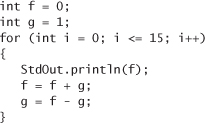
1.1.7 Give the value printed by each of the following code fragments:
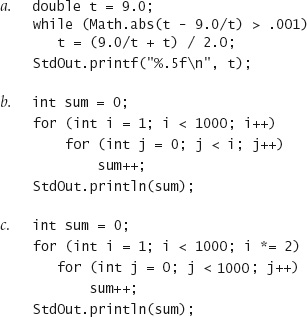
1.1.8 What do each of the following print?
a. System.out.println('b');
b. System.out.println('b' + 'c');
c. System.out.println((char) ('a' + 4));
Explain each outcome.
1.1.9 Write a code fragment that puts the binary representation of a positive integer N into a String s.
Solution: Java has a built-in method Integer.toBinaryString(N) for this job, but the point of the exercise is to see how such a method might be implemented. Here is a particularly concise solution:

1.1.10 What is wrong with the following code fragment?

Solution: It does not allocate memory for a[] with new. This code results in a variable a might not have been initialized compile-time error.
1.1.11 Write a code fragment that prints the contents of a two-dimensional boolean array, using * to represent true and a space to represent false. Include row and column numbers.
1.1.12 What does the following code fragment print?
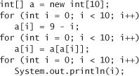
1.1.13 Write a code fragment to print the transposition (rows and columns changed) of a two-dimensional array with M rows and N columns.
1.1.14 Write a static method lg() that takes an int value N as argument and returns the largest int not larger than the base-2 logarithm of N. Do not use Math.
1.1.15 Write a static method histogram() that takes an array a[] of int values and an integer M as arguments and returns an array of length M whose ith entry is the number of times the integer i appeared in the argument array. If the values in a[] are all between 0 and M−1, the sum of the values in the returned array should be equal to a.length.
1.1.16 Give the value of exR1(6):
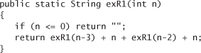
1.1.17 Criticize the following recursive function:
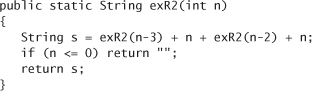
Answer: The base case will never be reached. A call to exR2(3) will result in calls to exR2(0), exR2(-3), exR3(-6), and so forth until a StackOverflowError occurs.
1.1.18 Consider the following recursive function:
What are the values of mystery(2, 25) and mystery(3, 11)? Given positive integers a and b, describe what value mystery(a, b) computes. Answer the same question, but replace + with * and replace return 0 with return 1.
1.1.19 Run the following program on your computer:
What is the largest value of N for which this program takes less 1 hour to compute the value of F(N)? Develop a better implementation of F(N) that saves computed values in an array.
1.1.20 Write a recursive static method that computes the value of ln (N!)
1.1.21 Write a program that reads in lines from standard input with each line containing a name and two integers and then uses printf() to print a table with a column of the names, the integers, and the result of dividing the first by the second, accurate to three decimal places. You could use a program like this to tabulate batting averages for baseball players or grades for students.
1.1.22 Write a version of BinarySearch that uses the recursive rank() given on page 25 and traces the method calls. Each time the recursive method is called, print the argument values lo and hi, indented by the depth of the recursion. Hint: Add an argument to the recursive method that keeps track of the depth.
1.1.23 Add to the BinarySearch test client the ability to respond to a second argument: + to print numbers from standard input that are not in the whitelist, - to print numbers that are in the whitelist.
1.1.24 Give the sequence of values of p and q that are computed when Euclid’s algorithm is used to compute the greatest common divisor of 105 and 24. Extend the code given on page 4 to develop a program Euclid that takes two integers from the command line and computes their greatest common divisor, printing out the two arguments for each call on the recursive method. Use your program to compute the greatest common divisor of 1111111 and 1234567.
1.1.25 Use mathematical induction to prove that Euclid’s algorithm computes the greatest common divisor of any pair of nonnegative integers p and q.
1.1.26 Sorting three numbers. Suppose that the variables a, b, c, and t are all of the same numeric primitive type. Show that the following code puts a, b, and c in ascending order:
1.1.27 Binomial distribution. Estimate the number of recursive calls that would be used by the code
to compute binomial(100, 50, 0.25). Develop a better implementation that is based on saving computed values in an array.
1.1.28 Remove duplicates. Modify the test client in BinarySearch to remove any duplicate keys in the whitelist after the sort.
1.1.29 Equal keys. Add to BinarySearch a static method rank() that takes a key and a sorted array of int values (some of which may be equal) as arguments and returns the number of elements that are smaller than the key and a similar method count() that returns the number of elements equal to the key. Note: If i and j are the values returned by rank(key, a) and count(key, a) respectively, then a[i..i+j-1] are the values in the array that are equal to key.
1.1.30 Array exercise. Write a code fragment that creates an N-by-N boolean array a[][] such that a[i][j] is true if i and j are relatively prime (have no common factors), and false otherwise.
1.1.31 Random connections. Write a program that takes as command-line arguments an integer N and a double value p (between 0 and 1), plots N equally spaced dots of size .05 on the circumference of a circle, and then, with probability p for each pair of points, draws a gray line connecting them.
1.1.32 Histogram. Suppose that the standard input stream is a sequence of double values. Write a program that takes an integer N and two double values l and r from the command line and uses StdDraw to plot a histogram of the count of the numbers in the standard input stream that fall in each of the N intervals defined by dividing (l, r) into N equal-sized intervals.
1.1.33 Matrix library. Write a library Matrix that implements the following API:
Develop a test client that reads values from standard input and tests all the methods.
1.1.34 Filtering. Which of the following require saving all the values from standard input (in an array, say), and which could be implemented as a filter using only a fixed number of variables and arrays of fixed size (not dependent on N)? For each, the input comes from standard input and consists of N real numbers between 0 and 1.
• Print the maximum and minimum numbers.
• Print the median of the numbers.
• Print the kth smallest value, for k less than 100.
• Print the sum of the squares of the numbers.
• Print the average of the N numbers.
• Print the percentage of numbers greater than the average.
• Print the N numbers in increasing order.
• Print the N numbers in random order.
1.1.35 Dice simulation. The following code computes the exact probability distribution for the sum of two dice:
The value dist[i] is the probability that the dice sum to k. Run experiments to validate this calculation simulating N dice throws, keeping track of the frequencies of occurrence of each value when you compute the sum of two random integers between 1 and 6. How large does N have to be before your empirical results match the exact results to three decimal places?
1.1.36 Empirical shuffle check. Run computational experiments to check that our shuffling code on page 32 works as advertised. Write a program ShuffleTest that takes command-line arguments M and N, does N shuffles of an array of size M that is initialized with a[i] = i before each shuffle, and prints an M-by-M table such that row i gives the number of times i wound up in position j for all j. All entries in the array should be close to N/M.
1.1.37 Bad shuffling. Suppose that you choose a random integer between 0 and N-1 in our shuffling code instead of one between i and N-1. Show that the resulting order is not equally likely to be one of the N! possibilities. Run the test of the previous exercise for this version.
1.1.38 Binary search versus brute-force search. Write a program BruteForceSearch that uses the brute-force search method given on page 48 and compare its running time on your computer with that of BinarySearch for largeW.txt and largeT.txt.
1.1.39 Random matches. Write a BinarySearch client that takes an int value T as command-line argument and runs T trials of the following experiment for N = 103, 104, 105, and 106: generate two arrays of N randomly generated positive six-digit int values, and find the number of values that appear in both arrays. Print a table giving the average value of this quantity over the T trials for each value of N.
A DATA TYPE is a set of values and a set of operations on those values. So far, we have discussed in detail Java’s primitive data types: for example, the values of the primitive data type int are integers between −231 and 231 − 1; the operations of int include +, *, -, /, %, <, and >. In principle, we could write all of our programs using only the built-in primitive types, but it is much more convenient to write programs at a higher level of abstraction. In this section, we focus on the process of defining and using data types, which is known as data abstraction (and supplements the function abstraction style that is the basis of SECTION 1.1).
Programming in Java is largely based on building data types known as reference types with the familiar Java class. This style of programming is known as object-oriented programming, as it revolves around the concept of an object, an entity that holds a data type value. With Java’s primitive types we are largely confined to programs that operate on numbers, but with reference types we can write programs that operate on strings, pictures, sounds, any of hundreds of other abstractions that are available in Java’s standard libraries or on our booksite. Even more significant than libraries of predefined data types is that the range of data types available in Java programming is open-ended, because you can define your own data types to implement any abstraction whatsoever.
An abstract data type (ADT) is a data type whose representation is hidden from the client. Implementing an ADT as a Java class is not very different from implementing a function library as a set of static methods. The primary difference is that we associate data with the function implementations and we hide the representation of the data from the client. When using an ADT, we focus on the operations specified in the API and pay no attention to the data representation; when implementing an ADT, we focus on the data, then implement operations on that data.
Abstract data types are important because they support encapsulation in program design. In this book, we use them as a means to
• Precisely specify problems in the form of APIs for use by diverse clients
• Describe algorithms and data structures as API implementations
Our primary reason for studying different algorithms for the same task is that performance characteristics differ. Abstract data types are an appropriate framework for the study of algorithms because they allow us to put knowledge of algorithm performance to immediate use: we can substitute one algorithm for another to improve performance for all clients without changing any client code.
You do not need to know how a data type is implemented in order to be able to use it, so we begin by describing how to write programs that use a simple data type named Counter whose values are a name and a nonnegative integer and whose operations are create and initialize to zero, increment by one, and examine the current value. This abstraction is useful in many contexts. For example, it would be reasonable to use such a data type in electronic voting software, to ensure that the only thing that a voter can do is increment a chosen candidate’s tally by one. Or, we might use a Counter to keep track of fundamental operations when analyzing the performance of algorithms. To use a Counter, you need to learn our mechanism for specifying the operations defined in the data type and the Java language mechanisms for creating and manipulating data-type values. Such mechanisms are critically important in modern programming, and we use them throughout this book, so this first example is worthy of careful attention.
To specify the behavior of an abstract data type, we use an application programming interface (API), which is a list of constructors and instance methods (operations), with an informal description of the effect of each, as in this API for Counter:
Even though the basis of a data-type definition is a set of values, the role of the values is not visible from the API, only the operations on those values. Accordingly, an ADT definition has many similarities with a library of static methods (see page 24):
• Both are implemented as a Java class.
• Instance methods may take zero or more arguments of a specified type, separated by commas and enclosed in parentheses.
• They may provide a return value of a specified type or no return value (signified by void).
And there are three significant differences:
• Some entries in the API have the same name as the class and lack a return type. Such entries are known as constructors and play a special role. In this case, Counter has a constructor that takes a String argument.
• Instance methods lack the static modifier. They are not static methods—their purpose is to operate on data type values.
• Some instance methods are present so as to adhere to Java conventions—we refer to such methods as inherited methods and shade them gray in the API.
As with APIs for libraries of static methods, an API for an abstract data type is a contract with all clients and, therefore, the starting point both for developing any client code and for developing any data-type implementation. In this case, the API tells us that to use Counter, we have available the Counter() constructor, the increment() and tally() instance methods, and the inherited toString() method.
Various Java conventions enable a data type to take advantage of built-in language mechanisms by including specific methods in the API. For example, all Java data types inherit a toString() method that returns a String representation of the data-type values. Java calls this method when any data-type value is to be concatenated with a String value with the + operator. The default implementation is not particularly useful (it gives a string representation of the memory address of the data-type value), so we often provide an implementation that overrides the default, and include toString() in the API whenever we do so. Other examples of such methods include equals(), compareTo(), and hashCode() (see page 101).
As with modular programming based on static methods, the API allows us to write client code without knowing details of the implementation (and to write implementation code without knowing details of any particular client). The mechanisms introduced on page 28 for organizing programs as independent modules are useful for all Java classes, and thus are effective for modular programming with ADTs as well as for libraries of static methods. Accordingly, we can use an ADT in any program provided that the source code is in a .java file in the same directory, or in the standard Java library, or accessible through an import statement, or through one of the classpath mechanisms described on the booksite. All of the benefits of modular programming follow. By encapsulating all the code that implements a data type within a single Java class, we enable the development of client code at a higher level of abstraction. To develop client code, you need to be able to declare variables, create objects to hold data-type values, and provide access to the values for instance methods to operate on them. These processes are different from the corresponding processes for primitive types, though you will notice many similarities.
Naturally, you can declare that a variable heads is to be associated with data of type Counter with the code
Counter heads;
but how can you assign values or specify operations? The answer to this question involves a fundamental concept in data abstraction: an object is an entity that can take on a data-type value. Objects are characterized by three essential properties: state, identity, and behavior. The state of an object is a value from its data type. The identity of an object distinguishes one object from another. It is useful to think of an object’s identity as the place where its value is stored in memory. The behavior of an object is the effect of data-type operations. The implementation has the sole responsibility for maintaining an object’s identity, so that client code can use a data type without regard to the representation of its state by conforming to an API that describes an object’s behavior. An object’s state might be used to provide information to a client or cause a side effect or be changed by one of its data type’s operations, but the details of the representation of the data-type value are not relevant to client code. A reference is a mechanism for accessing an object. Java nomenclature makes clear the distinction from primitive types (where variables are associated with values) by using the term reference types for nonprimitive types. The details of implementing references vary in Java implementations, but it is useful to think of a reference as a memory address, as shown at right (for brevity, we use three-digit memory addresses in the diagram).
Each data-type value is stored in an object. To create (or instantiate) an individual object, we invoke a constructor by using the keyword new, followed by the class name, followed by () (or a list of argument values enclosed in parentheses, if the constructor takes arguments). A constructor has no return type because it always returns a reference to an object of its data type. Each time that a client uses new(), the system
• Allocates memory space for the object
• Invokes the constructor to initialize its value
• Returns a reference to the object
In client code we typically create objects in an initializing declaration that associates a variable with the object, as we often do with variables of primitive types. Unlike primitive types, variables are associated with references to objects, not the data-type values themselves. We can create any number of objects from the same class—each object has its own identity and may or may not store the same value as another object of the same type. For example, the code
Counter heads = new Counter("heads");
Counter tails = new Counter("tails");
creates two different Counter objects. In an abstract data type, details of the representation of the value are hidden from client code. You might assume that the value associated with each Counter object is a String name and an int tally, but you cannot write code that depends on any specific representation (or even know whether that assumption is true—perhaps the tally is a long value).
The purpose of an instance method is to operate on data-type values, so the Java language includes a special mechanism to invoke instance methods that emphasizes a connection to an object. Specifically, we invoke an instance method by writing a variable name that refers to an object, followed by a period, followed by an instance method name, followed by 0 or more arguments, enclosed in parentheses and separated by commas. An instance method might change the data-type value or just examine the data-type value. Instance methods have all of the properties of static methods that we considered on page 24—arguments are passed by value, method names can be overloaded, they may have a return value, and they may cause side effects—but they have an additional property that characterizes them: each invocation is associated with an object. For example, the code
heads.increment();
invokes the instance method increment() to operate on the Counter object heads (in this case the operation involves incrementing the tally), and the code
heads.tally() - tails.tally();
invokes the instance method tally() twice, first to operate on the Counter object heads and then to operate on the Counter object tails (in this case the operation involves returning the tally as an int value). As these examples illustrate, you can use calls on instance methods in client code in the same way as you use calls on static methods—as statements (void methods) or values in expressions (methods that return a value). The primary purpose of static methods is to implement functions; the primary purpose of non-static (instance) methods is to implement data-type operations. Either type of method may appear in client code, but you can easily distinguish between them, because a static method call starts with a class name (uppercase, by convention) and a non-static method call always starts with an object name (lowercase, by convention). These differences are summarized in the table at right.
Declarations give us variable names for objects that we can use in code not just to create objects and invoke instance methods, but also in the same way as we use variable names for integers, floating-point numbers, and other primitive types. To develop client code for a given data type, we:
• Declare variables of the type, for use in referring to objects
• Use the keyword new to invoke a constructor that creates objects of the type
• Use the object name to invoke instance methods, either as statements or within expressions
For example, the class Flips shown at the top of the next page is a Counter client that takes a command-line argument T and simulates T coin flips (it is also a StdRandom client). Beyond these direct uses, we can use variables associated with objects in the same way as we use variables associated with primitive-type values:
• In assignment statements
• To pass or return objects from methods
• To create and use arrays of object.
Understanding the behavior of each of these types of uses requires thinking in terms of references, not values, as you will see when we consider them, in turn.
An assignment statement with a reference type creates a copy of the reference. The assignment statement does not create a new object, just another reference to an existing object. This situation is known as aliasing: both variables refer to the same object. The effect of aliasing is a bit unexpected, because it is different for variables holding values of a primitive type. Be sure that you understand the difference. If x and y are variables of a primitive type, then the assignment x = y copies the value of y to x. For reference types, the reference is copied (not the value). Aliasing is a common source of bugs in Java programs, as illustrated by the following example:
With a typical toString() implementation this code would print the string "2 ones" which may or may not be what was intended and is counterintuitive at first. Such bugs are common in programs written by people without much experience in using objects (that may be you, so pay attention here!). Changing the state of an object impacts all code involving aliased variables referencing that object. We are used to thinking of two different variables of primitive types as being independent, but that intuition does not carry over to variables of reference types.
You can pass objects as arguments to methods. This ability typically simplifies client code. For example, when we use a Counter as an argument, we are essentially passing both a name and a tally, but need only specify one variable. When we call a method with arguments, the effect in Java is as if each argument value were to appear on the right-hand side of an assignment statement with the corresponding argument name on the left. That is, Java passes a copy of the argument value from the calling program to the method. This arrangement is known as pass by value (see page 24). One important consequence is that the method cannot change the value of a caller’s variable. For primitive types, this policy is what we expect (the two variables are independent), but each time that we use a reference type as a method argument we create an alias, so we must be cautious. In other words, the convention is to pass the reference by value (make a copy of it) but to pass the object by reference. For example, if we pass a reference to an object of type Counter, the method cannot change the original reference (make it point to a different Counter), but it can change the value of the object, for example by using the reference to call increment().
Naturally, you can also use an object as a return value from a method. The method might return an object passed to it as an argument, as in the example below, or it might create an object and return a reference to it. This capability is important because Java methods allow only one return value—using objects enables us to write code that, in effect, returns multiple values.

In Java, every value of any nonprimitive type is an object. In particular, arrays are objects. As with strings, there is special language support for certain operations on arrays: declarations, initialization, and indexing. As with any other object, when we pass an array to a method or use an array variable on the right hand side of an assignment statement, we are making a copy of the array reference, not a copy of the array. This convention is appropriate for the typical case where we expect the method to be able to modify the array, by rearranging its entries, as, for example, in java.util.Arrays.sort() or the shuffle() method that we considered on page 32.
Array entries can be of any type, as we have already seen: args[] in our main() implementations is an array of String objects. When we create an array of objects, we do so in two steps:
• Create the array, using the bracket syntax for array constructors.
• Create each object in the array, using a standard constructor for each.
For example, the code below simulates rolling a die, using an array of Counter objects to keep track of the number of occurrences of each possible value. An array of objects in Java is an array of references to objects, not the objects themselves. If the objects are large, then we may gain efficiency by not having to move them around, just their references. If they are small, we may lose efficiency by having to follow a reference each time we need to get to some information.
WITH THIS FOCUS ON OBJECTS, writing code that embraces data abstraction (defining and using data types, with data-type values held in objects) is widely referred to as object-oriented programming. The basic concepts that we have just covered are the starting point for object-oriented programming, so it is worthwhile to briefly summarize them. A data type is a set of values and a set of operations defined on those values. We implement data types in independent Java class modules and write client programs that use them. An object is an entity that can take on a data-type value or an instance of a data type. Objects are characterized by three essential properties: state, identity, and behavior. A data-type implementation supports clients of the data type as follows:
• Client code can create objects (establish identity) by using the new construct to invoke a constructor that creates an object, initializes its instance variables, and returns a reference to that object.
• Client code can manipulate data-type values (control an object’s behavior, possibly changing its state) by using a variable associated with an object to invoke an instance method that operates on that object’s instance variables.
• Client code can manipulate objects by creating arrays of objects and passing them and returning them to methods, in the same way as for primitive-type values, except that variables refer to references to values, not the values themselves.
These capabilities are the foundation of a flexible, modern, and widely useful programming style that we will use as the basis for studying algorithms in this book.
The Java language has thousands of built-in ADTs, and we have defined many other ADTs to facilitate the study of algorithms. Indeed, every Java program that we write is a data-type implementation (or a library of static methods). To control complexity, we will specifically cite APIs for any ADT that we use in this book (not many, actually).
In this section, we introduce as examples several data types, with some examples of client code. In some cases, we present excerpts of APIs that may contain dozens of instance methods or more. We articulate these APIs to present real-world examples, to specify the instance methods that we will use in the book, and to emphasize that you do not need to know the details of an ADT implementation in order to be able to use it.
For reference, the data types that we use and develop in this book are shown on the facing page. These fall into several different categories:
• Standard system ADTs in java.lang.*, which can be used in any Java program.
• Java ADTs in libraries such as java.awt, java.net, and java.io, which can also be used in any Java program, but need an import statement.
• Our I/O ADTs that allow us to work with multiple input/output streams similar to StdIn and StdOut.
• Data-oriented ADTs whose primary purpose is to facilitate organizing and processing data by encapsulating the representation. We describe several examples for applications in computational geometry and information processing later in this section and use them as examples in client code later on.
• Collection ADTs whose primary purpose is to facilitate manipulating collections of data of the same type. We describe the basic Bag, Stack, and Queue types in SECTION 1.3, PQ types in CHAPTER 2, and the ST and SET types in CHAPTERS 3 and 5.
• Operations-oriented ADTs that we use to analyze algorithms, as described in SECTION 1.4 and SECTION 1.5.
• ADTs for graph algorithms, including both data-oriented ADTs that focus on encapsulating representations of various kinds of graphs and operations-oriented ADTs that focus on providing specifications for graph-processing algorithms.
This list does not include the dozens of types that we consider in exercises, which may be found in the index. Also, as described on page 90, we often distinguish multiple implementations of various ADTs with a descriptive prefix. As a group, the ADTs that we use demonstrate that organizing and understanding the data types that you use is an important factor in modern programming.
A typical application might use only five to ten of these ADTs. A prime goal in the development and organization of the ADTs in this book is to enable programmers to easily take advantage of a relatively small set of them in developing client code.
A natural example of object-oriented programming is designing data types for geometric objects. For example, the APIs on the facing page define abstract data types for three familiar geometric objects: Point2D (points in the plane), Interval1D (intervals on the line), and Interval2D (two-dimensional intervals in the plane, or axis-aligned rectangles). As usual, the APIs are essentially self-documenting and lead immediately to easily understood client code such as the example at left, which reads the boundaries of an Interval2D and an integer T from the command line, generates T random points in the unit square, and counts the number of points that fall in the interval (an estimate of the area of the rectangle). For dramatic effect, the client also draws the interval and the points that fall outside the interval. This computation is a model for a method that reduces the problem of computing the area and volume of geometric shapes to the problem of determining whether a point falls within the shape or not (a less difficult but not trivial problem). Of course, we can define APIs for other geometric objects such as line segments, triangles, polygons, circles, and so forth, though implementing operations on them can be challenging. Several examples are addressed in the exercises at the end of this section.
PROGRAMS THAT PROCESS GEOMETRIC OBJECTS have wide application in computing with models of the natural world, in scientific computing, video games, movies, and many other applications. The development and study of such programs and applications has blossomed into a far-reaching field of study known as computational geometry, which is a fertile area of examples for the application of the algorithms that we address in this book, as you will see in examples throughout the book. In the present context, our interest is to suggest that abstract data types that directly represent geometric abstractions are not difficult to define and can lead to simple and clear client code. This idea is reinforced in several exercises at the end of this section and on the booksite.
Whether it be a bank processing millions of credit card transactions or a web analytics company processing billions of touchpad taps or a scientific research group processing millions of experimental observations, a great many applications are centered around processing and organizing information. Abstract data types provide a natural mechanism for organizing the information. Without getting into details, the two APIs on the facing page suggest a typical approach for a commercial application. The idea is to define data types that allow us to keep information in objects that correspond to things in the real world. A date is a day, a month, and a year and a transaction is a customer, a date, and an amount. These two are just examples: we might also define data types that can hold detailed information for customers, times, locations, goods and services, or whatever. Each data type consists of constructors that create objects containing the data and methods for use by client code to access it. To simplify client code, we provide two constructors for each type, one that presents the data in its appropriate type and another that parses a string to get the data (see EXERCISE 1.2.19 for details). As usual, there is no reason for client code to know the representation of the data. Most often, the reason to organize the data in this way is to treat the data associated with an object as a single entity: we can maintain arrays of Transaction values, use Date values as a argument or a return value for a method, and so forth. The focus of such data types is on encapsulating the data, while at the same time enabling the development of client code that does not depend on the representation of the data. We do not dwell on organizing information in this way, except to take note that doing so and including the inherited methods toString(), compareTo(), equals(), and hashCode() allows us to take advantage of algorithm implementations that can process any type of data. We will discuss inherited methods in more detail on page 100. For example, we have already noted Java’s convention that enables clients to print a string representation of every value if we include toString() implementation in a data type. We consider conventions corresponding to the other inherited methods in SECTION 1.3, SECTION 2.5, SECTION 3.4, and SECTION 3.5, using Date and Transaction as examples. SECTION 1.3 gives classic examples of data types and a Java language mechanism known as parameterized types, or generics, that takes advantage of these conventions, and CHAPTER 2 and CHAPTER 3 are also devoted to taking advantage of generic types and inherited methods to develop implementations of sorting and searching algorithms that are effective for any type of data.
WHENEVER YOU HAVE DATA OF DIFFERENT TYPES that logically belong together, it is worthwhile to contemplate defining an ADT as in these examples. The ability to do so helps to organize the data, can greatly simplify client code in typical applications, and is an important step on the road to data abstraction.
Java’s String is an important and useful ADT. A String is an indexed sequence of char values. String has dozens of instance methods, including the following:
String values are similar to arrays of characters, but the two are not the same. Arrays have built-in Java language syntax for accessing a character; String has instance methods for indexed access, length, and many other operations. On the other hand, String has special language support for initialization and concatenation: instead of creating and initializing a string with a constructor, we can use a string literal; instead of invoking the method concat() we can use the + operator. We do not need to consider the details of the implementation, though understanding performance characteristics of some of the methods is important when developing string-processing algorithms, as you will see in CHAPTER 5. Why not just use arrays of characters instead of String values? The answer to this question is the same as for any ADT: to simplify and clarify client code. With String, we can write clear and simple client code that uses numerous convenient instance methods without regard to the way in which strings are represented (see facing page). Even this short list contains powerful operations that require advanced algorithms such as those considered in CHAPTER 5. For example, the argument of split() can be a regular expression (see SECTION 5.4)—the split() example on page 81 uses the argument “\\s+”, which means “one or more tabs, spaces, newlines, or returns.”
A disadvantage of the StdIn, StdOut, and StdDraw standard libraries of SECTION 1.1 is that they restrict us to working with just one input file, one output file, and one drawing for any given program. With object-oriented programming, we can define similar mechanisms that allow us to work with multiple input streams, output streams, and drawings within one program. Specifically, our standard libary includes the data types In, Out, and Draw with the APIs shown on the facing page, When invoked with a constructor having a String argument, In and Out will first try to find a file in the current directory of your computer that has that name. If it cannot do so, it will assume the argument to be a website name and will try to connect to that website (if no such website exists, it will issue a runtime exception). In either case, the specified file or website becomes the source/target of the input/output for the stream object thus created, and the read*() and print*() methods will refer to that file or website. (If you use the no-argument constructor, then you obtain the standard streams.) This arrangement makes it possible for a single program to process multiple files and drawings. You also can assign such objects to variables, pass them as arguments or return values from methods, create arrays of them, and manipulate them just as you manipulate objects of any type. The program Cat shown at left is a sample client of In and Out that uses multiple input streams to concatenate several input files into a single output file. The In and Out classes also contain static methods for reading files containing values that are all int, double, or String types into an array (see page 126 and EXERCISE 1.2.15).
As with libraries of static methods, we implement ADTs with a Java class, putting the code in a file with the same name as the class, followed by the .java extension. The first statements in the file declare instance variables that define the data-type values. Following the instance variables are the constructor and the instance methods that implement operations on data-type values. Instance methods may be public (specified in the API) or private (used to organize the computation and not available to clients). A data-type definition may have multiple constructors and may also include definitions of static methods. In particular, a unit-test client main() is normally useful for testing and debugging. As a first example, we consider an implementation of the Counter ADT that we defined on page 65. A full annotated implementation is shown on the facing page, for reference as we discuss its constituent parts. Every ADT implementation that you will develop has the same basic ingredients as this simple example.
To define data-type values (the state of each object), we declare instance variables in much the same way as we declare local variables. There is a critical distinction between instance variables and the local variables within a static method or a block that you are accustomed to: there is just one value corresponding to each local variable at a given time, but there are numerous values corresponding to each instance variable (one for each object that is an instance of the data type). There is no ambiguity with this arrangement, because each time that we access an instance variable, we do so with an object name—that object is the one whose value we are accessing. Also, each declaration is qualified by a visibility modifier. In ADT implementations, we use private, using a Java language mechansim to enforce the idea that the representation of an ADT is to be hidden from the client, and also final, if the value is not to be changed once it is initialized. Counter has two instance variables: a String value name and an int value count. If we were to use public instance variables (allowed in Java) the data type would, by definition, not be abstract, so we do not do so.
Every Java class has at least one constructor that establishes an object’s identity. A constructor is like a static method, but it can refer directly to instance variables and has no return value. Generally, the purpose of a constructor is to initialize the instance variables. Every constructor creates an object and provides to the client a reference to that object. Constructors always share the same name as the class. We can overload the name and have multiple constructors with different signatures, just as with methods. If no other constructor is defined, a default no-argument constructor is implicit, has no arguments, and initializes instance values to default values. The default values of instance variables are 0 for primitive numeric types, false for boolean, and null for reference types. These defaults may be changed by using initializing declarations for instance variables. Java automatically invokes a constructor when a client program uses the keyword new. Overloaded constructors are typically used to initialize instance variables to client-supplied values other than the defaults. For example, Counter has a one-argument constructor that initializes the name instance variable to the value given as argument (leaving the count instance variable to be initialized to the default value 0).

To implement data-type instance operations (the behavior of each object), we implement instance methods with code that is precisely like the code that you learned in SECTION 1.1 to implement static methods (functions). Each instance method has a return type, a signature (which specifies its name and the types and names of its parameter variables), and a body (which consists of a sequence of statements, including a return statement that provides a value of the return type back to the client). When a client invokes a method, the parameter values (if any) are initialized with client values, the statements are executed until a return value is computed, and the value is returned to the client, with the same effect as if the method invocation in the client were replaced with that value. All of this action is the same as for static methods, but there is one critical distinction for instance methods: they can access and perform operations on instance variables. How do we specify which object’s instance variables we want to use? If you think about this question for a moment, you will see the logical answer: a reference to a variable in an instance method refers to the value for the object that was used to invoke the method. When we say heads.increment() the code in increment() is referring to the instance variables for heads. In other words, object-oriented programming adds one critically important additional way to use variables in a Java program:
• to invoke an instance method that operates on the object’s values.
The difference from working solely with static methods is semantic (see the Q&A), but has reoriented the way that modern programmers think about developing code in many situations. As you will see, it also dovetails well with the study of algorithms and data structures.
In summary, the Java code that we write to implement instance methods uses three kinds of variables:
• Parameter variables
• Local variables
• Instance variables
The first two of these are the same as for static methods: parameter variables are specified in the method signature and initialized with client values when the method is called, and local variables are declared and initialized within the method body. The scope of parameter variables is the entire method; the scope of local variables is the following statements in the block where they are defined. Instance variables are completely different: they hold data-type values for objects in a class, and their scope is the entire class (whenever there is an ambiguity, you can use the this prefix to identify instance variables). Understanding the distinctions among these three kinds of variables in instance methods is a key to success in object-oriented programming.
These are the basic components that you need to understand to be able to build and use abstract data types in Java. Every ADT implementation that we will consider will be a Java class with private instance variables, constructors, instance methods, and a client. To fully understand a data type, we need the API, typical client code, and an implementation, summarized for Counter on the facing page. To emphasize the separation of client and implementation, we normally present each client as a separate class containing a static method main() and reserve test client’s main() in the data-type definition for minimal unit testing and development (calling each instance method at least once). In each data type that we develop, we go through the same steps. Rather than thinking about what action we need to take next to accomplish a computational goal (as we did when first learning to program), we think about the needs of a client, then accommodate them in an ADT, following these three steps:
• Specify an API. The purpose of the API is to separate clients from implementations, to enable modular programming. We have two goals when specifying an API. First, we want to enable clear and correct client code. Indeed, it is a good idea to write some client code before finalizing the API to gain confidence that the specified data-type operations are the ones that clients need. Second, we want to be able to implement the operations. There is no point specifying operations that we have no idea how to implement.
• Implement a Java class that meets the API specifications. First we choose the instance variables, then we write constructors and the instance methods.
• Develop multiple test clients, to validate the design decisions made in the first two steps.
What operations do clients need to perform, and what data-type values can best support those operations? These basic decisions are at the heart of every implementation that we develop.
As with any programming concept, the best way to understand the power and utility of ADTs is to consider carefully more examples and more implementations. There will be ample opportunity for you to do so, as much of this book is devoted to ADT implementations, but a few more simple examples will help us lay the groundwork for addressing them.
Shown on the facing page are two implementations of the Date ADT that we considered on page 79. To reduce clutter, we omit the parsing constructor (which is described in EXERCISE 1.2.19) and the inherited methods equals() (see page 103), compareTo() (see page 247), and hashCode() (see EXERCISE 3.4.22). The straightforward implementation on the left maintains the day, month, and year as instance variables, so that the instance methods can just return the appropriate value; the more space-efficient implementation on the right uses only a single int value to represent a date, using a mixed-radix number that represents the date with day d, month m, and year y as 512y + 32m + d. One way that a client might notice the difference between these implementations is by violating implicit assumptions: the second implementation depends for its correctness on the day being between 0 and 31, the month being between 0 and 15, and the year being positive (in practice, both implementations should check that months are between 1 and 12, days are between 1 and 31, and that dates such as June 31 and February 29, 2009, are illegal, though that requires a bit more work). This example highlights the idea that we rarely fully specify implementation requirements in an API (we normally do the best we can, and could do better here). Another way that a client might notice the difference between the two implementations is performance: the implementation on the right uses less space to hold data-type values at the cost of more time to provide them to the client in the agreed form (one or two arithmetic operations are needed). Such tradeoffs are common: one client may prefer one of the implementations and another client might prefer the other, so we need to accommodate both. Indeed, one of the recurring themes of this book is that we need to understand the space and time requirements of various implementations and their suitability for use by various clients. One of the key advantages of using data abstraction in our implementations is that we can normally change from one implementation to another without changing any client code.
Multiple implementations of the same API can present maintainence and nomenclature issues. In some cases, we simply want to replace an old implementation with an improved one. In others, we may need to maintain two implementations, one suitable for some clients, the other suitable for others. Indeed, a prime goal of this book is to consider in depth several implementations of each of a number of fundamental ADTs, generally with different performance characteristics. In this book, we often compare the performance of a single client using two different implementations of the same API. For this reason, we generally adopt an informal naming convention where we:
• Identify different implementations of the same API by prepending a descriptive modifier. For example, we might name our Date implementations on the previous page BasicDate and SmallDate, and we might wish to develop a SmartDate implementation that can validate that dates are legal.
• Maintain a reference implementation with no prefix that makes a choice that should be suitable for most clients. That is, most clients should just use Date.
In a large system, this solution is not ideal, as it might involve changing client code. For example, if we were to develop a new implementation ExtraSmallDate, then our only options are to change client code or to make it the reference implementation for use by all clients. Java has various advanced language mechanisms for maintaining multiple implementations without needing to change client code, but we use them sparingly because their use is challenging (and even controversial) even for experts, especially in conjuction with other advanced language features that we do value (generics and iterators). These issues are important (for example, ignoring them led to the celebrated Y2K problem at the turn of the millennium, because many programs used their own implementations of the date abstraction that did not take into account the first two digits of the year), but detailed consideration of these issues would take us rather far afield from the study of algorithms.
The accumulator API shown on the facing page defines an abstract data type that provides to clients the ability to maintain a running average of data values. For example, we use this data type frequently in this book to process experimental results (see SECTION 1.4). The implementation is straightforward: it maintains a int instance variable counts the number of data values seen so far and a double instance variable that keeps track of the sum of the values seen so far; to compute the average it divides the sum by the count. Note that the implementation does not save the data values—it could be used for a huge number of them (even on a device that is not capable of holding that many), or a huge number of accumulators could be used on a big system. This performance characteristic is subtle and might be specified in the API, because an implementation that does save the values might cause an application to run out of memory.
The visual accumulator implementation shown on the facing page extends Accumulator to present a useful side effect: it draws on StdDraw all the data (in gray) and the running average (in red). The easiest way to do so is to add a constructor that provides the number of points to be plotted and the maximum value, for rescaling the plot. VisualAccumulator is not technically an implementation of the Accumulator API (its constructor has a different signature and it causes a different prescribed side effect). Generally, we are careful to fully specify APIs and are loath to make any changes in an API once articulated, as it might involve changing an unknown amount of client (and implementation) code, but adding a constructor to gain functionality can sometimes be defended because it involves changing the same line in client code that we change when changing a class name. In this example, if we have developed a client that uses an Accumulator and perhaps has many calls to addDataValue() and mean(), we can enjoy the benefits of VisualAccumulator by just changing one line of client code.
An abstract data type is a data type whose representation is hidden from the client. This idea has had a powerful effect on modern programming. The various examples that we have considered give us the vocabulary to address advanced characteristics of ADTs and their implementation as Java classes. Many of these topics are, on the surface, tangential to the study of algorithms, so it is safe for you to skim this section and refer to it later in the context of specific implementation problems. Our goal is to put important information related to designing data types in one place for reference and to set the stage for implementations throughout this book.
A hallmark of object-oriented programming is that it enables us to encapsulate data types within their implementations, to facilitate separate development of clients and data type implementations. Encapsulation enables modular programming, allowing us to
• Independently develop of client and implementation code
• Substitute improved implementations without affecting clients
• Support programs not yet written (the API is a guide for any future client)
Encapsulation also isolates data-type operations, which leads to the possibility of
• Limiting the potential for error
• Adding consistency checks and other debugging tools in implementations
• Clarifying client code
An encapsulated data type can be used by any client, so it extends the Java language. The programming style that we are advocating is predicated on the idea of breaking large programs into small modules that can be developed and debugged independently. This approach improves the resiliency of our software by limiting and localizing the effects of making changes, and it promotes code reuse by making it possible to substitute new implementations of a data type to improve performance, accuracy, or memory footprint. The same idea works in many settings. We often reap the benefits of encapsulation when we use system libraries. New versions of the Java system often include new implementations of various data types or static method libraries, but the APIs do not change. In the context of the study of algorithms and data structures, there is strong and constant motivation to develop better algorithms because we can improve performance for all clients by substituting an improved ADT implementation without changing the code of any client. The key to success in modular programming is to maintain independence among modules. We do so by insisting on the API being the only point of dependence between client and implementation. You do not need to know how a data type is implemented in order to use it and you can assume that a client knows nothing but the API when implementing a data type. Encapsulation is the key to attaining both of these advantages.
One of the most important and most challenging steps in building modern software is designing APIs. This task takes practice, careful deliberation, and many iterations, but any time spent designing a good API is certain to be repaid in time saved debugging or code reuse. Articulating an API might seem to be overkill when writing a small program, but you should consider writing every program as though you will need to reuse the code someday. Ideally, an API would clearly articulate behavior for all possible inputs, including side effects, and then we would have software to check that implementations meet the specification. Unfortunately, a fundamental result from theoretical computer science known as the specification problem implies that this goal is actually impossible to achieve. Briefly, such a specification would have to be written in a formal language like a programming language, and the problem of determining whether two programs perform the same computation is known, mathematically, to be undecidable. Therefore, our APIs are brief English-language descriptions of the set of values in the associated abstract data type along with a list of constructors and instance methods, again with brief English-language descriptions of their purpose, including side effects. To validate the design, we always include examples of client code in the text surrounding our APIs. Within this broad outline, there are numerous pitfalls that every API design is susceptible to:
• An API may be too hard to implement, implying implementations that are difficult or impossible to develop.
• An API may be too hard to use, leading to client code that is more complicated than it would be without the API.
• An API may be too narrow, omitting methods that clients need.
• An API may be too wide, including a large number of methods not needed by any client. This pitfall is perhaps the most common, and one of the most difficult to avoid. The size of an API tends to grow over time because it is not difficult to add methods to an existing API, but it is difficult to remove methods without breaking existing clients.
• An API may be too general, providing no useful abstractions.
• An API may be too specific, providing abstractions so detailed or so diffuse as to be useless.
• An API may be too dependent on a particular representation, therefore not serving the purpose of freeing client code from the details of using that representation. This pitfall is also difficult to avoid, because the representation is certainly central to the development of the implementation.
These considerations are sometimes summarized in yet another motto: provide to clients the methods they need and no others.
Data abstraction is naturally suited to the study of algorithms, because it helps us provide a framework within which we can precisely specify both what an algorithm needs to accomplish and how a client can make use of an algorithm. Typically, in this book, an algorithm is an implementation of an instance method in an abstract data type. For example, our whitelisting example at the beginning of the chapter is naturally cast as an ADT client, based on the following operations:
• Construct a SET from an array of given values.
• Determine whether a given value is in the set.
These operations are encapsulated in the StaticSETofInts ADT, shown on the facing page along with Whitelist, a typical client. StaticSETofInts is a special case of the more general and more useful symbol table ADT that is the focus of CHAPTER 3. Binary search is one of several algorithms that we study that is suitable for implementing these ADTs. By comparison with the BinarySearch implementation on page 47, this implementation leads to clearer and more useful client code. For example, StaticSETofInts enforces the idea that the array must be sorted before rank() is called. With the abstract data type, we separate the client from the implementation making it easier for any client to benefit from the ingenuity of the binary search algorithm, just by following the API (clients of rank() in BinarySearch have to know to sort the array first). Whitelisting is one of many clients that can take advantage of binary search.
EVERY JAVA PROGRAM is a set of static methods and/or a data type implementation. In this book, we focus primarily on abstract data type implementations such as StaticSETofInts, where the focus is on operations and the representation of the data is hidden from the client. As this example illustrates, data abstraction enables us to
• Precisely specify what algorithms can provide for clients
• Separate algorithm implementations from the client code
• Develop layers of abstraction, where we make use of well-understood algorithms to develop other algorithms
These are desirable properties of any approach to describing algorithms, whether it be an English-language description or pseudo-code. By embracing the Java class mechanism in support of data abstraction, we have little to lose and much to gain: working code that we can test and use to compare performance for diverse clients.
Java provides language support for defining relationships among objects, known as inheritance. These mechanisms are widely used by software developers, so you will study them in detail if you take a course in software engineering. The first inheritance mechanism that we consider is known as subtyping, which allows us to specify a relationship between otherwise unrelated classes by specifying in an interface a set of common methods that each implementing class must contain. An interface is nothing more than a list of instance methods. For example, instead of using our informal API, we might have articulated an interface for Date:
and then referred to the interface in our implementation code
so that the Java compiler will check that it matches the interface. Adding the code implements Datable to any class that implements month(), day(), and year() provides a guarantee to any client that an object of that class can invoke those methods. This arrangement is known as interface inheritance—an implementing class inherits the interface. Interface inheritance allows us to write client programs that can manipulate objects of any type that implements the interface (even a type to be created in the future), by invoking methods in the interface. We might have used interface inheritance in place of our more informal APIs, but chose not to do so to avoid dependence on specific high-level language mechanisms that are not critical to the understanding of algorithms and to avoid the extra baggage of interface files. But there are a few situations where Java conventions make it worthwhile for us to take advantage of interfaces: we use them for comparison and for iteration, as detailed in the table at the bottom of the previous page, and will consider them in more detail when we cover those concepts.
Java also supports another inheritence mechanism known as subclassing, which is a powerful technique that enables a programmer to change behavior and add functionality without rewriting an entire class from scratch. The idea is to define a new class (subclass, or derived class) that inherits instance methods and instance variables from another class (superclass, or base class). The subclass contains more methods than the superclass. Moreover, the subclass can redefine or override methods in the superclass. Subclassing is widely used by systems programmers to build so-called extensible libraries—one programmer (even you) can add methods to a library built by another programmer (or, perhaps, a team of systems programmers), effectively reusing the code in a potentially huge library. For example, this approach is widely used in the development of graphical user interfaces, so that the large amount of code required to provide all the facilities that users expect (drop-down menus, cut-and-paste, access to files, and so forth) can be reused. The use of subclassing is controversial among systems and applications programmers (its advantages over interface inheritance are debatable), and we avoid it in this book because it generally works against encapsulation. Certain vestiges of the approach are built in to Java and therefore unavoidable: specifically, every class is a subtype of Java’s Object class. This structure enables the “convention” that every class includes an implementation of getClass(), toString(), equals(), hashCode(), and several other methods that we do not use in this book. Actually, every class inherits these methods from Object through subclassing, so any client can use them for any object. We usually override toString(), equals(), hashCode() in new classes because the default Object implementation generally does not lead to the desired behavior. We now will consider toString() and equals(); we discuss hashCode() in SECTION 3.4.
By convention, every Java type inherits toString() from Object, so any client can invoke toString() for any object. This convention is the basis for Java’s automatic conversion of one operand of the concatenation operator + to a String whenever the other operand is a String. If an object’s data type does not include an implementation of toString(), then the default implementation in Object is invoked, which is normally not helpful, since it typically returns a string representation of the memory address of the object. Accordingly, we generally include implementations of toString() that override the default in every class that we develop, as highlighted for Date on the facing page. As illustrated in this code, toString() implementations are often quite simple, implicitly (through +) using toString() for each instance variable.
Java supplies built-in reference types known as wrapper types, one for each of the primitive types: Boolean, Byte, Character, Double, Float, Integer, Long, and Short correspond to boolean, byte, char, double, float, int, long, and short, respectively. These classes consist primarily of static methods such as parseInt() but they also include the inherited instance methods toString(), compareTo(), equals(), and hashCode(). Java automatically converts from primitive types to wrapper types when warranted, as described on page 122. For example, when an int value is concatenated with a String, it is converted to an Integer that can invoke toString().
What does it mean for two objects to be equal? If we test equality with (a == b) where a and b are reference variables of the same type, we are testing whether they have the same identity: whether the references are equal. Typical clients would rather be able to test whether the data-type values (object state) are the same, or to implement some type-specific rule. Java gives us a head start by providing implementations both for standard types such as Integer, Double, and String and for more complicated types such as File and URL. When using these types of data, you can just use the built-in implementation. For example, if x and y are String values, then x.equals(y) is true if and only if x and y have the same length and are identical in each character position. When we define our own data types, such as Date or Transaction, we need to override equals(). Java’s convention is that equals() must be an equivalence relation. It must be
• Reflexive: x.equals(x) is true.
• Symmetric: x.equals(y) is true if and only if y.equals(x) is true.
• Transitive: if x.equals(y) and y.equals(z) are true, then so is x.equals(z).
In addition, it must take an Object as argument and satisfy the following properties.
• Consistent: multiple invocations of x.equals(y) consistently return the same value, provided neither object is modified.
• Not null: x.equals(null) returns false.
These are natural definitions, but ensuring that these properties hold, adhering to Java conventions, and avoiding unnecessary work in an implementation can be tricky, as illustrated for Date below. It takes the following step-by-step approach:
• If the reference to this object is the same as the reference to the argument object, return true. This test saves the work of doing all the other checks in this case.
• If the argument is null, return false, to adhere to the convention (and to avoid following a null reference in code to follow).
• If the objects are not from the same class, return false. To determine an object’s class, we use getClass(). Note that we can use == to tell us whether two objects of type Class are equal because getClass() is guaranteed to return the same reference for all objects in any given class.
• Cast the argument from Object to Date (this cast must succeed because of the previous test).
• Return false if any instance variables do not match. For other classes, some other definition of equality might be appropriate. For example, we might regard two Counter objects as equal if their count instance variables are equal.
This implementation is a model that you can use to implement equals() for any type that you implement. Once you have implemented one equals(), you will not find it difficult to implement another.
The ability to assign a new value to a reference variable creates the possibility that a program may have created an object that can no longer be referenced. For example, consider the three assignment statements in the figure at left. After the third assignment statement, not only do a and b refer to the same Date object (12/31/1999), but also there is no longer a reference to the Date object that was created and used to initialize b. The only reference to that object was in the variable b, and this reference was overwritten by the assignment, so there is no way to refer to the object again. Such an object is said to be orphaned. Objects are also orphaned when they go out of scope. Java programs tend to create huge numbers of objects (and variables that hold primitive data-type values), but only have a need for a small number of them at any given point in time. Accordingly, programming languages and systems need mechanisms to allocate memory for data-type values during the time they are needed and to free the memory when they are no longer needed (for an object, sometime after it is orphaned). Memory management turns out to be easier for primitive types because all of the information needed for memory allocation is known at compile time. Java (and most other systems) takes care of reserving space for variables when they are declared and freeing that space when they go out of scope. Memory management for objects is more complicated: the system can allocate memory for an object when it is created, but cannot know precisely when to free the memory associated with each object because the dynamics of a program in execution determines when objects are orphaned. In many languages (such as C and C++) the programmer is responsible for both allocating and freeing memory. Doing so is tedious and notoriously error-prone. One of Java’s most significant features is its ability to automatically manage memory. The idea is to free the programmers from the responsibility of managing memory by keeping track of orphaned objects and returning the memory they use to a pool of free memory. Reclaiming memory in this way is known as garbage collection. One of Java’s characteristic features is its policy that references cannot be modified. This policy enables Java to do efficient automatic garbage collection. Programmers still debate whether the overhead of automatic garbage collection justifies the convenience of not having to worry about memory management.
An immutable data type, such as Date, has the property that the value of an object never changes once constructed. By contrast, a mutable data type, such as Counter or Accumulator, manipulates object values that are intended to change. Java’s language support for helping to enforce immutability is the final modifier. When you declare a variable to be final, you are promising to assign it a value only once, either in an initializer or in the constructor. Code that could modify the value of a final variable leads to a compile-time error. In our code, we use the modifier final with instance variables whose values never change. This policy serves as documentation that the value does not change, prevents accidental changes, and makes programs easier to debug. For example, you do not have to include a final value in a trace, since you know that its value never changes. A data type such as Date whose instance variables are all primitive and final is immutable (in code that does not use implementation inheritence, our convention). Whether to make a data type immutable is an important design decision and depends on the application at hand. For data types such as Date, the purpose of the abstraction is to encapsulate values that do not change so that we can use them in assignment statements and as arguments and return values from functions in the same way as we use primitive types (without having to worry about their values changing). A programmer implementing a Date client might reasonably expect to write the code d = d0 for two Date variables, in the same way as for double or int values. But if Date were mutable and the value of d were to change after the assignment d = d0, then the value of d0 would also change (they are both references to the same object)! On the other hand, for data types such as Counter and Accumulator, the very purpose of the abstraction is to encapsulate values as they change. You have already encountered this distinction as a client programmer, when using Java arrays (mutable) and Java’s String data type (immutable). When you pass a String to a method, you do not worry about that method changing the sequence of characters in the String, but when you pass an array to a method, the method is free to change the contents of the array. String objects are immutable because we generally do not want String values to change, and Java arrays are mutable because we generally do want array values to change. There are also situations where we want to have mutable strings (that is the purpose of Java’s StringBuilder class) and where we want to have immutable arrays (that is the purpose of the Vector class that we consider later in this section). Generally, immutable types are easier to use and harder to misuse than mutable types because the scope of code that can change their values is far smaller. It is easier to debug code that uses immutable types because it is easier to guarantee that variables in client code that uses them remain in a consistent state. When using mutable types, you must always be concerned about where and when their values change. The downside of immutability is that a new object must be created for every value. This expense is normally manageable because Java garbage collectors are typically optimized for such situations. Another downside of immutability stems from the fact that, unfortunately, final guarantees immutability only when instance variables are primitive types, not reference types. If an instance variable of a reference type has the final modifier, the value of that instance variable (the reference to an object) will never change—it will always refer to the same object—but the value of the object itself can change. For example, this code does not implement an immutable type:
A client program could create a Vector by specifying the entries in an array, and then (bypassing the API) change the elements of the Vector after construction:
The instance variable coords[] is private and final, but Vector is mutable because the client holds a reference to the data. Immutability needs to be taken into account in any data-type design, and whether a data type is immutable should be specified in the API, so that clients know that object values will not change. In this book, our primary interest in immutability is for use in certifying the correctness of our algorithms. For example, if the type of data used for a binary search algorithm were mutable, then clients could invalidate our assumption that the array is sorted for binary search.
To conclude, we briefly discuss Java language mechanisms that enables you to verify assumptions about your program as it is running. We use two Java language mechanisms for this purpose:
• Exceptions and errors, which generally handle unforeseen errors outside our control
• Assertions, which verify assumptions that we make within code we develop
Liberal use of both exceptions and assertions is good programming practice. We use them sparingly in the book for economy, but you will find them throughout the code on the booksite. This code aligns with a substantial amount of the surrounding commentary about each algorithm in the text that has to do with exceptional conditions and with asserted invariants.
Exceptions and errors are disruptive events that occur while a program is running, often to signal an error. The action taken is known as throwing an exception or throwing an error. We have already encountered exceptions thrown by Java system methods in the course of learning basic features of Java: StackOverflowError, ArithmeticException, ArrayIndexOutOfBoundsException, OutOfMemoryError, and NullPointerException are typical examples. You can also create your own exceptions. The simplest kind is a RuntimeException that terminates execution of the program and prints an error message
throw new RuntimeException("Error message here.");
A general practice known as fail fast programming suggests that an error is more easily pinpointed if an exception is thrown as soon as an error is discovered (as opposed to ignoring the error and deferring the exception to sometime in the future).
An assertion is a boolean expression that you are affirming is true at that point in the program. If the expression is false, the program will terminate and report an error message. We use assertions both to gain confidence in the correctness of programs and to document intent. For example, suppose that you have a computed value that you might use to index into an array. If this value were negative, it would cause an ArrayIndexOutOfBoundsException sometime later. But if you write the code assert index >= 0; you can pinpoint the place where the error occurred. You can also add an optional detail message such as
assert index >= 0 : "Negative index in method X";
to help you locate the bug. By default, assertions are disabled. You can enable them from the command line by using the -enableassertions flag (-ea for short). Assertions are for debugging: your program should not rely on assertions for normal operation since they may be disabled. When you take a course in systems programming, you will learn to use assertions to ensure that your code never terminates in a system error or goes into an infinite loop. One model, known as the design-by-contract model of programming expresses the idea. The designer of a data type expresses a precondition (the condition that the client promises to satisfy when calling a method), a postcondition (the condition that the implementation promises to achieve when returning from a method), and side effects (any other change in state that the method could cause). During development, these conditions can be tested with assertions.
The language mechanisms discussed throughout this section illustrate that effective data-type design leads to nontrivial issues that are not easy to resolve. Experts are still debating the best ways to support some of the design ideas that we are discussing. Why does Java not allow functions as arguments? Why does Matlab copy arrays passed as arguments to functions? As mentioned early in CHAPTER 1, it is a slippery slope from complaining about features in a programming language to becoming a programming-language designer. If you do not plan to do so, your best strategy is to use widely available languages. Most systems have extensive libraries that you certainly should use when appropriate, but you often can simplify your client code and protect yourself by building abstractions that can easily transport to other languages. Your main goal is to develop data types so that most of your work is done at a level of abstraction that is appropriate to the problem at hand.
The table on the facing page summarizes the various kinds of Java classes that we have considered.
Q. Why bother with data abstraction?
A. It helps us produce reliable and correct code. For example, in the 2000 presidential election, Al Gore received –16,022 votes on an electronic voting machine in Volusia County, Florida—the tally was clearly not properly encapsulated in the voting machine software!
Q. Why the distinction between primitive and reference types? Why not just have reference types?
A. Performance. Java provides the reference types Integer, Double, and so forth that correspond to primitive types that can be used by programmers who prefer to ignore the distinction. Primitive types are closer to the types of data that are supported by computer hardware, so programs that use them usually run faster than programs that use corresponding reference types.
Q. Do data types have to be abstract?
A. No. Java also allows public and protected to allow some clients to refer directly to instance variables. As described in the text, the advantages of allowing client code to directly refer to data are greatly outweighed by the disadvantages of dependence on a particular representation, so all instance variables are private in our code. We also occasionally use private instance methods to share code among public methods.
Q. What happens if I forget to use new when creating an object?
A. To Java, it looks as though you want to call a static method with a return value of the object type. Since you have not defined such a method, the error message is the same as anytime you refer to an undefined symbol. If you compile the code
Counter c = Counter("test");
you get this error message:
cannot find symbol
symbol : method Counter(String)
You get the same kind of error message if you provide the wrong number of arguments to a constructor.
Q. What happens if I forget to use new when creating an array of objects?
A. You need to use new for each object that you create, so when you create an array of N objects, you need to use new N+1 times: once for the array and once for each of the objects. If you forget to create the array:
Counter[] a;
a[0] = new Counter("test");
you get the same error message that you would get when trying to assign a value to any uninitialized variable:
but if you forget to use new when creating an object within the array and then try to use it to invoke a method:
Counter[] a = new Counter[2];
a[0].increment();
you get a NullPointerException.
Q. Why not write StdOut.println(x.toString()) to print objects?
A. That code works fine, but Java saves us the trouble of writing it by automatically invoking the toString() method for any object, since println() has a method that takes an Object as argument.
Q. What is a pointer?
A. Good question. Perhaps that should be NullReferenceException. Like a Java reference, you can think of a pointer as a machine address. In many programming languages, the pointer is a primitive data type that programmers can manipulate in many ways. But programming with pointers is notoriously error-prone, so operations provided for pointers need to be carefully designed to help programmers avoid errors. Java takes this point of view to an extreme (that is favored by many modern programming-language designers). In Java, there is only one way to create a reference (new) and only one way to change a reference (with an assignment statement). That is, the only things that a programmer can do with references are to create them and copy them. In programming-language jargon, Java references are known as safe pointers, because Java can guarantee that each reference points to an object of the specified type (and it can determine which objects are not in use, for garbage collection). Programmers used to writing code that directly manipulates pointers think of Java as having no pointers at all, but people still debate whether it is really desirable to have unsafe pointers.
Q. Where can I find more details on how Java implements references and does garbage collection?
A. One Java system might differ completely from another. For example, one natural scheme is to use a pointer (machine address); another is to use a handle (a pointer to a pointer). The former gives faster access to data; the latter provides for better garbage collection.
Q. What exactly does it mean to import a name?
A. Not much: it just saves some typing. You could type java.util.Arrays instead of Arrays everywhere in your code instead of using the import statement.
Q. What is the problem with implementation inheritance?
A. Subtyping makes modular programming more difficult for two reasons. First, any change in the superclass affects all subclasses. The subclass cannot be developed independently of the superclass; indeed, it is completely dependent on the superclass. This problem is known as the fragile base class problem. Second, the subclass code, having access to instance variables, can subvert the intention of the superclass code. For example, the designer of a class like Counter for a voting system may take great care to make it so that Counter can only increment the tally by one (remember Al Gore’s problem). But a subclass, with full access to the instance variable, can change it to any value whatever.
Q. How do I make a class immutable?
A. To ensure immutability of a data type that includes an instance variable of a mutable type, we need to make a local copy, known as a defensive copy. And that may not be enough. Making the copy is one challenge; ensuring that none of the instance methods change values is another.
Q. What is null?
A. It is a literal value that refers to no object. Invoking a method using the null reference is meaningless and results in a NullPointerException. If you get this error message, check to make sure that your constructor properly initializes all of its instance variables.
Q. Can I have a static method in a class that implements a data type?
A. Of course. For example, all of our classes have main(). Also, it is natural to consider adding static methods for operations that involve multiple objects where none of them naturally suggests itself as the one that should invoke the method. For example, we might define a static method like the following within Point:
Often, including such methods can serve to clarify client code.
Q. Are there other kinds of variables besides parameter, local, and instance variables?
A. If you include the keyword static in a class declaration (outside of any type) it creates a completely different type of variable, known as a static variable. Like instance variables, static variables are accessible to every method in the class; however, they are not associated with any object. In older programming languages, such variables are known as global variables, because of their global scope. In modern programming, we focus on limiting scope and therefore rarely use such variables. When we do, we will call attention to them.
Q. What is a deprecated method?
A. A method that is no longer fully supported, but kept in an API to maintain compatibility. For example, Java once included a method Character.isSpace(), and programmers wrote programs that relied on using that method’s behavior. When the designers of Java later wanted to support additional Unicode whitespace characters, they could not change the behavior of isSpace() without breaking client programs, so, instead, they added a new method, Character.isWhiteSpace(), and deprecated the old method. As time wears on, this practice certainly complicates APIs. Sometimes, entire classes are deprecated. For example, Java deprecated its java.util.Date in order to better support internationalization.
1.2.1 Write a Point2D client that takes an integer value N from the command line, generates N random points in the unit square, and computes the distance separating the closest pair of points.
1.2.2 Write an Interval1D client that takes an int value N as command-line argument, reads N intervals (each defined by a pair of double values) from standard input, and prints all pairs that intersect.
1.2.3 Write an Interval2D client that takes command-line arguments N, min, and max and generates N random 2D intervals whose width and height are uniformly distributed between min and max in the unit square. Draw them on StdDraw and print the number of pairs of intervals that intersect and the number of intervals that are contained in one another.
1.2.4 What does the following code fragment print?
1.2.5 What does the following code fragment print?
Answer: "Hello World". String objects are immutable—string methods return a new String object with the appropriate value (but they do not change the value of the object that was used to invoke them). This code ignores the objects returned and just prints the original string. To print "WORLD", use s = s.toUpperCase() and s = s.substring(6, 11).
1.2.6 A string s is a circular rotation of a string t if it matches when the characters are circularly shifted by any number of positions; e.g., ACTGACG is a circular shift of TGACGAC, and vice versa. Detecting this condition is important in the study of genomic sequences. Write a program that checks whether two given strings s and t are circular shifts of one another. Hint: The solution is a one-liner with indexOf(), length(), and string concatenation.
1.2.7 What does the following recursive function return?
1.2.8 Suppose that a[] and b[] are each integer arrays consisting of millions of integers. What does the follow code do? Is it reasonably efficient?
int[] t = a; a = b; b = t;
Answer. It swaps them. It could hardly be more efficient because it does so by copying references, so that it is not necessary to copy millions of elements.
1.2.9 Instrument BinarySearch (page 47) to use a Counter to count the total number of keys examined during all searches and then print the total after all searches are complete. Hint: Create a Counter in main() and pass it as an argument to rank().
1.2.10 Develop a class VisualCounter that allows both increment and decrement operations. Take two arguments N and max in the constructor, where N specifies the maximum number of operations and max specifies the maximum absolute value for the counter. As a side effect, create a plot showing the value of the counter each time its tally changes.
1.2.11 Develop an implementation SmartDate of our Date API that raises an exception if the date is not legal.
1.2.12 Add a method dayOfTheWeek() to SmartDate that returns a String value Monday, Tuesday, Wednesday, Thursday, Friday, Saturday, or Sunday, giving the appropriate day of the week for the date. You may assume that the date is in the 21st century.
1.2.13 Using our implementation of Date as a model (page 91), develop an implementation of Transaction.
1.2.14 Using our implementation of equals() in Date as a model (page 103), developan implementation of equals() for Transaction.
1.2.15 File input. Develop a possible implementation of the static readInts() method from In (which we use for various test clients, such as binary search on page 47) that is based on the split() method in String.
Solution:
We will consider a different implementation in SECTION 1.3 (see page 126).
1.2.16 Rational numbers. Implement an immutable data type Rational for rational numbers that supports addition, subtraction, multiplication, and division.
You do not have to worry about testing for overflow (see EXERCISE 1.2.17), but use as instance variables two long values that represent the numerator and denominator to limit the possibility of overflow. Use Euclid’s algorithm (see page 4) to ensure that the numerator and denominator never have any common factors. Include a test client that exercises all of your methods.
1.2.17 Robust implementation of rational numbers. Use assertions to develop an implementation of Rational (see EXERCISE 1.2.16) that is immune to overflow.
1.2.18 Variance for accumulator. Validate that the following code, which adds the methods var() and stddev() to Accumulator, computes both the mean and variance of the numbers presented as arguments to addDataValue():
This implementation is less susceptible to roundoff error than the straightforward implementation based on saving the sum of the squares of the numbers.
1.2.19 Parsing. Develop the parse constructors for your Date and Transaction implementations of EXERCISE 1.2.13 that take a single String argument to specify the initialization values, using the formats given in the table below.
Partial solution: